First page of Book is given
Tamilnadu Government emblem is given
GOVERNMENT OF TAMIL NADU
STANDARD SEVEN TERM ONE
VOLUME - 3
Social Science
A publication under Free Textbook Programme of Government of Tamil Nadu
Department of School Education
Untouchability is Inhuman and a Crime
Government of Tamil Nadu
First Edition - 2019
Revised Edition – 2,020, 2,022, 2,023
Reprint – 2,021, 2,024
(Published under New Syllabus in Trimester Pattern)
NOT FOR SALE
Content Creation
State Council of Educational Research and Training
© S C E R T 2019
Printing & Publishing
Tamil Nadu Textbook and Educational Services Corporation
HISTORY |
||||||
Unit |
Titles |
Page Number |
Month |
|||
Unit, 1 |
Sources of Medieval India |
Page Number 102 |
Month June |
|||
Unit, 2 |
Emergence of New Kingdoms in North India |
Page Number 110 |
Month July |
|||
Unit, 3 |
Emergence of New Kingdoms in South India: Later Cholas and Pandyas |
Page Number 122 |
Month August |
|||
Unit, 4 |
The Delhi Sultanate |
Page Number 134 |
Month August & September |
|||
Geography |
||||||
Unit, 1 |
Interior of the Earth |
Page Number 145 |
Month June |
|||
Unit, 2 |
Landforms |
Page Number 155 |
Month July |
|||
Unit, 3 |
Population and Settlement |
Page Number 163 |
Month August |
|||
Civics |
||||||
Unit, 1 |
Equality |
Page Number 172 |
Month June |
|||
Unit, 2 |
Political Parties |
Page Number 177 |
Month August |
|||
Economics |
||||||
Unit, 1 |
Production |
Page Number 186 |
Month July |
|||
(content table ends)
QR CODE (QR code description begins E- BOOK IS GIVEN, NUMBER, D,9, R,8,5 QR code description ends)
QR CODE QR code description begins ASSESSMENT IS GIVEN, NUMBER, 7, E, 1, X, M QR code description ends)
To acquaint ourselves with
Sources of the study of medieval India
Temples, mosques, tombs, palaces and forts as important sources
Literary and inscriptional texts
Accounts of Arab and Turkish travellers
QR CODE IS GIVEN, QR code description begins NUMBER, O, X, K, G, T QR code description ends)
The periods from A.D. (CE) 700 to 1200 and from A.D. (CE) 1200 to 1700 are classified as Early Medieval and Later Medieval periods, respectively, in Indian history. Numerous and varied sources are fortunately available to the historians engaging in the study of Medieval India. Added to the information that can be gleaned from inscriptions, monuments and coins are the accounts left by Arab, Persian and Turkish chroniclers. These accounts are rich in detail and have given first-hand information on the life of kings, though they provide very little information on the life of the common people. The opinions of the courtiers and chroniclers are often one-sided, written in a hyperbolic language, exaggerating the king’s achievements. Let us now explore the various sources available for the study of the history of Medieval India
Do you know the famous words of Khafi Khan, a courtier of Emperor Aurangzeb? (Box Item)
He says, ‘It is the duty of an historian to be faithful, to have no hope of profit, no fear of injury, to show no partiality on one side, or animosity on the other, to know no difference between friend and stranger, and to write nothing but with sincerity.
Sources
Sources are the supporting materials, documents or records in the form of evidence that help to reconstruct the past.
We examine the details of political, economic and socio-cultural developments with the aid of sources
Classification of Sources
Primary Sources: Inscriptions, monuments and coins, and the information available in them.
Secondary Sources: Literary works, chronicles, travelogues, biographies and autobiographies.
Inscriptions
Inscriptions are writings engraved on solid surfaces such as rocks, stones, temple walls and metals. The king’s royal decrees, dedications and donations, monuments raised in commemoration of victories in wars, those built in memory of deceased warriors, contain rich information about the concerned era. Copper-plate grants, which were treated as legal documents, have significant source value. The Islamic-Persian practices and the relatively high cost of copper plates made palm leaf and paper cheaper alternatives from 13th century onwards.
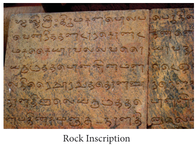
Picture, picture description begins rock inscription picture is given picture description ends
Several copper-plate grants issued during the later Chola period (10th to 13th century) record gifts to individual priests or teachers who were Hindu, Buddhist, or Jaina, or to persons of eminence. Both the giver and the receiver are elaborately described. By contrast, most stone inscriptions differ in their content.
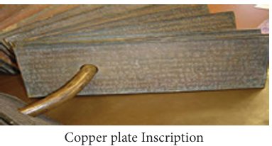
Picture, picture description begins copper plate inscription picture is given picture description ends.
In stone inscriptions, the beneficence of a donor is recorded. The major focus is upon the giver. Tiruvalangadu plates of Rajendra Chola 1 and the Anbil plates of Sundara Chola are notable examples. Uttiramerur inscriptions in Kanchipuram district provide details of the way in which the village administration was conducted.
Various types of lands gifted by the Chola kings are known from the inscriptions and copper plates. They are:
Vellanvagai, land of non-brahmin proprietors
Brahmadeya, land gifted to Brahmins
Shalabhoga, land for the maintenance of a school
Devadana, land gifted to temples
Pallichchandam, land donated to Jaina institutions
Monuments
Temples, palaces, mosques, tombs, forts, minars and minarets are called by the collective name monuments.
QR CODE QR Code description begins QR CodeIS GIVEN, NUMBER, E, C, L,4, X QR code description ends.
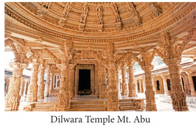
Picture, picture description begins dilwara temple at mount abu is given picture description ends.
The Sultans of Delhi introduced a new type of architecture. The monuments they built had arches, domes and minarets as the main features. The inscriptions in these monuments contain rich information, which can be used to construct history. The medieval Khajuraho monuments (Madhya Pradesh) and temples in Konark (Odisha) and Dilwara (Mount Abu, Rajastan) constitute valuable sources to understand the religion-centered cultural evolution in northern India. Temples in Thanjavur (Brihadeshwara), Gangaikonda Cholapuram and Darasuram symbolise the magnificent structures the Later Cholas built in Tamil Nadu. Vitala and Virupaksha temples at Hampi similarly speak of the contribution of Vijayanagara rulers (15th century]
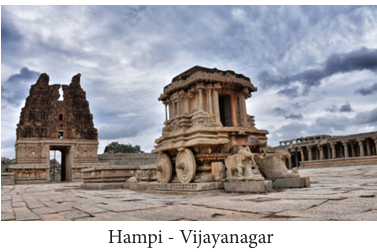
Picture, picture description begins vijaya nagar- hampi temple picture is given picture description ends.
Quwwat-ul Islam Masjid, Moth-ki-Masjid, Jama Masjid, Fatehpur Sikri Dargah (all in and around Delhi) and Charminar (Hyderabad) are the important mosques belonging to the medieval times.
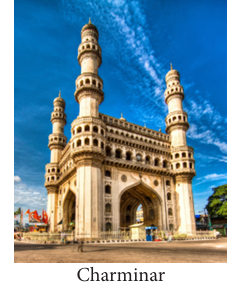
Picture, picture description begins charminar picture is given picture description ends
The forts of historical importance are Agra Fort, Chittor Fort, Gwalior Fort and Delhi Red Fort as well as the forts of Daulatabad (Aurangabad) and Firoz Shah Kotla (Delhi). Palaces in Jaipur, Jaisalmer and Jodhpur signify the greatness of the Rajput dynasty that wielded enormous power from these places. Qutb Minar and Alai-Darwaza, the tombs of Iltutmish, Balban and all the Mughal rulers are the other prominent structures recognised as valuable sources of information. Cities in ruin such as Firozabad and Tughlaqabad in north India and Hampi in south India remain rich repositories of the history of medieval India
Coins
The portrait and the legend on the coins convey the names of kings with their titles, events, places, dates, dynasties and Royal emblems. The composition of metals in the coins gives us information on the economic condition of the empire. Mention of king’s achievements like military conquests, territorial expansion, trade links and religious faith can also be found in the coins.
Muhammad Ghori had stamped the figure of Goddess Lakshmi on his gold coins and had his name inscribed on it. This coin tells us that this early Turkish invader was in all likelihood liberal in religious outlook.
Copper Jitals are available for the study of the period of the Delhi Sultans.
Silver Tanka introduced by Iltutmish, Ala ud-din Khalji’s gold coins, Muhammad-bin Tughluq’s copper token currency are indicative of coinage as well as the economic prosperity or otherwise of the country of the time
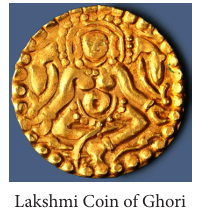
Picture, picture description begins gold coin of Lakshmi picture is given picture description ends.
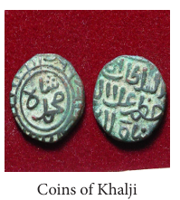
Picture, picture description begins gold coins of khalji is given picture description ends.
DO YOU KNOW? (Box item)
A jital contained 3.6 grains of silver. Forty-eight jitals were equal to 1 silver tanka
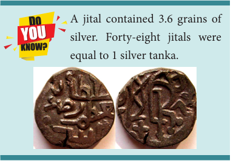
Picture, picture description begins Jital Picture is given in the do you know item. picture description ends.
Religious Literature
Devotional movement in South India and later in North resulted in the development of bhakti or devotional literature. The Chola period was known as the period of devotional literature and works such as Kamba Ramayanam, Sekkizhar’s Periyapuranam, Nalayira Divyaprabhandham, composed by 12 Azhwars and compiled by Nathamuni, Devaram composed by Appar, Sambandar and Sundarar and compiled by Nambiyandar Nambi, Manikkavasakar’s Thiruvasagam, all were scripted during the Chola times. Jayadeva’s Gita Govindam (12th century) was a follow-up of the Bhakti Movement in South India. Kabir Das, a 15th century mystic poet, also had an influence on the Bhakti Movement in India
Secular Literature
Madura Vijayam and Amuktamalyatha were poems composed by Gangadevi and Krishnadevaraya respectively that help us gain insight into the events and individuals associated with the Vijayanagara Empire. Chand Bardai’s Prithiviraj Raso portrays the Rajput king’s valour. For pre-Islamic periods, the only exception was Kalhana’s Rajtarangini (11th century).
Books, Biographies and Autobiographies
Minhaj-us-Siraj, patronised by Sultan Nazir-ud-din Mahmud of Slave Dynasty, wrote Tabakat-i-Nasiri. The compendium deals with the period from the conquest of Muhammad Ghori to A.D. (CE) 1260. The compendium was named after his patron. In the 13th century, Hasan Nizami, a migrant from Ghazni wrote. Taj-ul-Ma’asir towards the end of Iltutmish’s rule. It provides information about Qutb-ud din Aibak and is considered the first official history of the Delhi Sultanate. Zia-ud-din Barani, a courtier of Muhammad Tughluq, wrote Tarikh-i-Firoz Shahi, in which he dealt with the history of Delhi Sultanate from Ghiyas ud-din Balban to the early years of the reign of Firoz Shah Tughluq. Ferishta’s Tarikh-i-Frishta (16th century) deals with the history of the rise of the Mughal power in India.
Tabakat is an Arabic word meaning 'generations or centuries'.
Tuzk is a Persian word meaning 'autobiography'.
Tarikh or Tahquiq are Arabic words meaning 'history'.
In the 16th century, emperor Babur’s Babur Nama and Abul Fazal’s Ain-i-Akbari and Akbar Nama provided detailed information about these two emperors. In the 17th century, Jahangir wrote his memoir, Tuzk-i-Jahangiri, throwing a lot of light on the period. Apart from autobiographies of emperors, Tabakat-i-Akbari, authored by Nizam-ud-din Ahmad, is considered reliable than the exaggerated account of Abul Fazal. Similarly, Badauni’s outstanding work, Tarikh-i-Badauni (Badauni's History), was published in 1595. This work spans three volumes. The volume on Akbar’s reign is a frank and critical account of Akbar's administration, particularly of his religious policy
Travellers and Travelogues
Marco Polo, a Venetian traveller, visited when the Pandya kingdom was becoming the leading Tamil power in the 13th century. Marco Polo was twice in Kayal, which was a port city (presently in Thoothukudi district of Tamilnadu). It was full of ships from Arabia and China. Marco Polo tells us that he himself came by a ship from China. According to Marco Polo, thousands of horses were imported into southern India by sea from Arabia and Persia
Al-Beruni (11th century) accompanied Mahmud of Ghazni in one of his campaigns, and stayed in India for 10 years. The most accurate account of Mahmud’s Somnath expedition is that of Alberuni. As learned man and a scholar, he travelled all over India trying to understand India and her people. He learnt Sanskrit and studied the philosophy of India. In his book Tahquiq-i- Hind, Alberuni discussed the Indian conditions, systems of knowledge, social norms and religion.
Ibn Battuta (14th century), an Arab-born Morocco scholar, travelled from Morocco right across North Africa to Egypt and then to Central Asia and India. His travelogue (Rihla [The Travels]) contains rich details about the people and the countries he visited. According to him, Egypt was rich then, because of the whole of the Indian trade with the West passed through it. Ibn Battuta tells us of caste in India and the practice of sati. We learn from him that Indian merchants were carrying on a brisk trade in foreign ports and Indian ships in the seas. He describes the city of Delhi a vast and magnificent city. Those were the days when Sultan Muhammad bin Tughluq transferred his capital from Delhi to Devagiri (Daulatabad) in the south, converting this city into a desert.
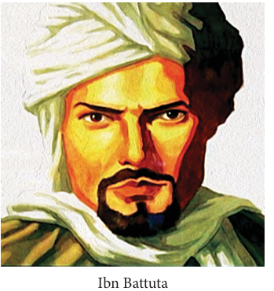
Picture, picture description begins the picture of ibn Battuta is given picture description ends.
In the South, Vijayanagar had many foreign visitors who left behind their detailed accounts of the state. An Italian named Nicolo Conti came in 1420. Abdur-Razzaq came from Herat (the court of Great Khan in Central Asia) in 1443. Domingo Paes, a Portuguese traveller, visited the city in 1522. All of them recorded their observations, which are very useful for us today to know the glory of the Vijayanagar Empire
and events in the courts, which have evidentiary value are dealt with.
monuments, belonging to early Medieval and Mughal periods, are highlighted.
discussed.
and economic conditions of the medieval times are detailed.
Chronicler, a person who writes accounts of important historical events, வரலாற்றுப் பதிவாளர்
animosity hostility, antagonism, விரோதம், பகைமை
travelogue, a book or illustrated account of the places visited and experiences encountered by a traveller, பயணக்குறிப்புகள்
commemoration, in remembrance of, நினைவாக
elaborately, in detail, விரிவாக
minarets, a t all tower, typically part of a mosque, தூபிகள்
repositories, the places, buildings where materials are stored or kept, களஞ்சியங்கள்
portraits, pictures, images in drawing or painting, உருவப்படங்கள்
compendium, a collection of detailed information about a particular subject, especially in a book, தொகுப்பு
substantiate, to prove with evidence, சான்றுகளுடன் நிரூபித்தல்
QR CODE description begins QR CODE IS GIVEN, NUMBER, A,4, H, P, K QR CODE description ends.
Choose the correct answer
1, Dash are the writings engraved on solid surfaces such as rocks, stones, temple walls and metals.
a) Chronicles,
b) Travelogues,
c) Coins,
d) Inscriptions
2, Dash was the land gifted to temples.
a) Vellanvagai,
b) Shalabhoga,
c) Brahmadeya,
d) Devadana.
3, Dash period was known as the period of devotional literature.
a) Chola,
b) Pandya,
c) Rajput,
d) Vijayanagara,
4, Dash provides information about the first Sultan of Delhi.
a) Ain-i-Akbari,
b) Taj-ul-Ma’asir,
c) Tuzk-i-Jahangiri,
d) Tarikh-i-Frishta
5, Dash an Arab-born Morocco scholar, travelled from Morocco to India.
a) Marco Polo,
b) Al Beruni,
c) Domingo Paes,
d) Ibn Battuta
2, Fill in the Blanks
1, Dash inscriptions provide details about administration in a Brahmadeya village.
2, Dash had stamped the figure of Goddess Lakshmi on his gold coins and had his name inscribed on it.
3, 3 point 6 grains of silver amounted to a Dash
4, Dash was patronised by Sultan Nazir-ud-din Mahmud of Slave Dynasty.
5, An Italian traveller Dash visited Vijayanagar Empire in 1420
3, Match the following
1, Khajuraho - Odisha
2, Konark - Hampi
3, Dilwara - Madhya Pradesh
4, Virupaksha - Rajasthan
4, State true or false
1, Pallichchandam was the land donated to Jaina institution.
2, The composition of metal coins gives us information on the political condition of the empire.
3, The high cost of copper made palm leaf and paper cheaper alternatives for recording royal orders and events in royal courts.
4, Domingo Paes, a Portuguese traveller, visited the Chola Empire in 1522.
5, Match the statement with the reason
Tick (√ ) the appropriate answer.
1, Assertion(A): Muhammad Ghori’s gold coins carried the figure of Goddess Lakshmi.
Reason(R): The Turkish invader was liberal in his religious outlook.
a) R is the correct explanation of A.
b) R is not the correct explanation of A.
c) A is wrong and R is correct.
d) A and R are wrong.
2) Find out the wrong pair
a) Madura Vijayam - Gangadevi
b) Abul Fazal - Ain-i-Akbari
c) Ibn Battuta - Tahquiq-i-Hind
d) Amuktamalyatha - Krishnadevaraya
3) Find out the odd one
a) Inscriptions, b) Travelogues, c) Monuments, d) Coins
6, Answer the following in one or two sentences
1, Who compiled Nalayira Divyaprabhandham?
2, What does the word Tuzk mean?
3, Name Jahangir’s memoir.
4, Name the two different types of sources for the study of history.
5, List out the important mosques and forts constructed during the medieval times.
6, Mention the important foreign travellers who visited India during the medieval period.
7, Answer the following in detail
1, Describe the different types of coins introduced by the rulers of Delhi Sultanate.
8, Answer Grid
1, Dash was a courtier of Emperor Aurangazeb. Answer:
2, Tiruvalangadu copper plates belong to dash. Answer:
3, Dash was the land for the maintenance of the school. Answer:
4, Dash compiled Periyapuranam. Answer:
5, Ddash is an Arabic word meaning history. Answer:
6, Muhammed bin Tughluq transferred his capital from Delhi to dash in the south. Answer
9, HOTs
The composition of metals in coins is indicative of the economic prosperity of the empire - Substantiate.
10, Student Activity
Prepare an album collecting pictures of palaces, tombs, mosques and forts of Medieval India.
11, Life skill
Find out from the libraries in your town or village and prepare a report about the primary and secondary sources available there
References
1, Abraham Eraly, The Age of Wrath, New Delhi:Penguin Group, 2014.
2, Burton Stein, A History of India, New Delhi: Oxford University Press, 2004 (Reprint).
3, K.A. Neelankanta Shastri, Cholas. Madras: University of Madras (Reprint).
4, S.K. Singh, History of Medieval India. New Delhi: Axis Books Private Limited, 2013
Sources of Medieval India
PROCEDURE:
Step 1: Open the Browser and type the given URL (or) Scan the QR Code.
Step 2: Click “India” Option and then select any period (Example, Medieval)
Step 3: Select any dynasty and then select any Kingdom (Example, Sultanate)
Step 4: Explore the coins with pictorial descriptions.
Sources of Medieval India URL: https://www.mintageworld.com/ (or) scan the QR Code
QR CODE description begins QR code IS GIVEN, NUMBER, V, J, T, W, Z QR CODE description ends.
To acquire knowledge about the kingdoms of Rajputs and their counterparts in North India
To assess the contributions of Rajputs and Palas to Indian culture
To know about the early military expeditions of Arabs and Turks
QR CODE NUMBER IS GIVEN, QR CODE description begins NUMBER, W,2,5, R, C. QR CODE description ends.
Rajput states formed a collective entity that was called Rajputana. Chittor was prominent and had become the rallying point for all Rajput clans. It was small compared to Malwa and Gujarat. Yet the Rajputs ruled over these states. In commemoration of the victory of Rana of Chittor over Malwa, the Jaya Stambha, the tower of victory, was built in Chittor. The Pratiharas and the Palas had established their powerful kingdoms in western India and in eastern India respectively. By the 9th century, the Pratihara dynasty had progressed to such an extent that it called itself the sovereigns of Rajasthan and Kanauj. The decline of Pratihara kingdom led to the rise of Palas in Bengal and Chauhans in north-western India. India’s Islamic period might have begun in the immediate context of Arabs’ conquest of Sind (A.D. (Common Era )712) rather than in A.D. (Common Era ) thousand two hundred. But the resistance shown by the kings of Kanauj, especially of Yasovarman (A.D. (Common Era )736) and later by the Rajput chiefs and kings who held Kanauj and most of northern India until the middle of the 10th century made it impossible
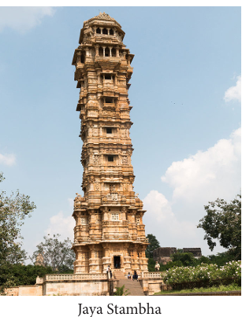
.Picture, picture description begins jaya stambha temple tower picture is given picture description ends.
The word ‘Rajput’ is derived from the Sanskrit word Rajputra, which means ‘scion of the royal blood’. After the death of Harsha in A.D. (CE) 647, various Rajput clans established kingdoms in different parts of northern and central India. The Rajputs trace their pedigree far back into the past. Their three principal houses are the Suryavanshi or the Race of the Sun, the Chandravanshi or the Race of the Moon and the Agnikula or the Race of Fire God. Among those who claimed descent from solar and lunar lines, Chandelas of Bundelkhand were prominent. Tomaras were ruling in the Haryana region. But they were overthrown by the Chauhans in the 12th century.
Thirty-six royal Rajput clans were listed by the Oriental scholar James Tod in A.D. (CE) 1829. Among them four claimed a special status: the Pratiharas, the Chauhans, the Chalukyas (different from the Deccan Chalukyas), known as Solankis, and the Paramaras of Pawars. All the four clans were of the Agnikula origin.
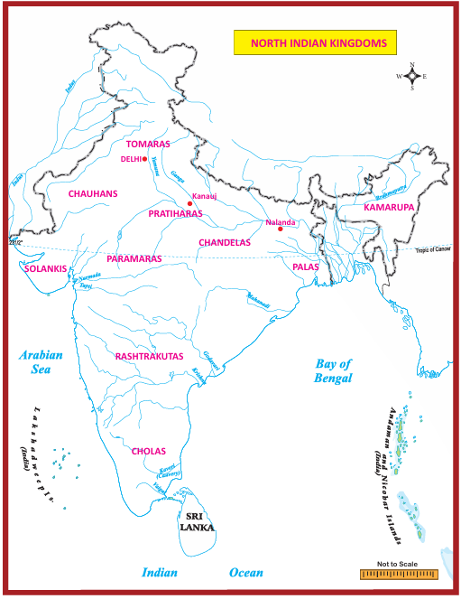
Picture, picture description begins india political map is given, in that map north indian kingdoms, Tomaras, Chauhans, Pratiharas, Chandelas, Kamapura, Palas, Paramaras, Solankis, Rashtrakutas, Cholas are highlighted picture description ends.
The Pratiharas or Gurjara Pratiharas, one of the four prominent clans of the Rajputs, ruled from Gurjaratra (in Jodhpur). In the 6th century A.D. (Common Era), Harichandra laid the foundation of the Gurjara dynasty. Nagabhatta 1 was the f irst and prominent ruler of Pratiharas. In the 8th century, he ruled over Broach and Jodhpur and extended his dominion upto Gwalior. He repulsed the invasion of the Arabs of Sind from the east and checked their expansion. He was succeeded by Vatsaraja, who desired to dominate the whole of North India. His attempt to control over Kanauj brought him into conflict with the Pala ruler Dharmapala
Box Item
There was a prolonged tripartite struggle between the Gurjara Pratiharas of Malwa, the Rashtrakutas of Deccan and the Palas of Bengal, as each one of them wanted to establish their supremacy over the fertile region of Kanauj. In the process, all the three powers were weakened.
Vatsaraja’s successors Nagabhatta-II and Rambhadra did not do anything impressively. Mihirabhoja or Bhoja, son of Rambhadra, within a few years of his accession, succeeded in consolidating the power of the Pratiharas. As a strong ruler, Bhoja was able to maintain peace in his kingdom. The Arab menace was firmly tackled by him. After Bhoja, the Pratihara Empire continued its full glory for nearly a century
Having successfully resisted the Arabs, the Pratiharas turned their attention towards the east and by the end of millennium, they ruled over a large part of Rajasthan and Malwa. They also held Kanauj for some time. The Rajputs fought each other endlessly in the 11th and 12th centuries. Taking advantage of these internecine quarrels, many local kings succeeded in making themselves independent
Dharmapala (A.D. (Common Era) 770 - 810)
Gopala, who founded the Pala dynasty, did not have royal antecedents. He was elected by the people for his superior capabilities. During his reign from 750 to 770, Gopala laid the foundations for the future greatness of this dynasty in Bengal. Dharmapala, his son, made the Pala kingdom a powerful force in northern Indian politics. He led a successful campaign against Kanauj. He was a great patron of Buddhism. He founded Vikramashila Monastery, which became a great centre of Buddhist learning
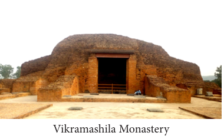
Picture, picture description begins vikramashila monastery picture is given picture description ends.
Dharmapala was succeeded by his son, Devapala, who extended Pala control eastwards into Kamarupa (Assam). Devapala was also a great patron of Buddhism. He gifted five villages to Buddhists. He also constructed many temples along with monasteries in Magadha. According to the historian R.C. Majumdar, ‘The reigns of Dharmapala and Devapala constitute the most brilliant chapter in the history of Bengal.’
After Devapala, five rulers ruled the region insignificantly. The kingdom attained unprecedented glory when Mahipala ascended the throne in 988
Mahipala - 1 (988 - 1038)
Mahipala – 1, was the most powerful ruler of the Pala dynasty. He is called the founder of the second Pala dynasty. The decline of Pratiharas gave the Palas an opportunity to take a leading role in north Indian affairs. But he could not extend his domain beyond Banaras because of the impressive campaigns of the Chola king from the South, Rajendra Chola. Mahipala restored the old glory of the Palas. He constructed and repaired a large number of religious buildings at Banaras, Sarnath and Nalanda. The Pala dynasty declined soon after the death of Mahipala and gave way to the Sena dynasty.
The Chauhans ruled between A.D. (Common Era) 956 and 1192 over the eastern parts of the present-day Rajasthan, establishing their capital at Sakambari. This Rajput dynasty was founded by Simharaji, who was popularly known as the founder of the city of Ajmer.
The Chauhans were the feudatories of the Pratiharas and staunchly stood by them to check the Arab invasions. The last of Chauhan kings, Prithiviraj Chauhan, was considered the greatest of all Chauhan rulers. He defeated Muhammad Ghori in the first battle of Tarain fought in 1191. However, he was defeated and killed in the second battle of Tarain in 1192.
Art
Rajput courts were centres of culture where literature, music, dance, paintings, fine arts and sculpture flourished. A specific style of Rajput painting—often focusing on religious themes emerged at Rajput courts. Their style of painting is called ‘Rajasthani’. The Rajasthani style of painting can be seen at Bikaner, Jodhpur, Mewar, Jaisalmer (all in Rajasthan)
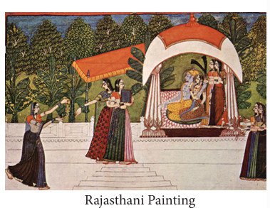
Picture, picture description begins rajasthani painting picture is given picture description ends.
Architecture
The Rajputs were great builders. Some of the important examples of the Rajput buildings are the strong fortresses of Chittorgarh. Ranathambhor and Kumbahlgarh (all in Rajasthan), Mandu, Gwalior, Chanderi and Asirgarh (all in Madhya Pradesh)
The examples of domestic architecture of the Rajputs are the palaces of Mansingh at Gwalior, the buildings at Amber (Jaipur) and lake palaces at Udaipur. Many of the Rajput cities and palaces stand among the hills in forts or by the side of beautiful artificial lakes. The castle of Jodhpur in Rajasthan is perched upon a lofty rock overlooking the town.
The temples the Rajput rulers built have won the admiration of art critics. The temples in Khajuraho, the Sun temple in Konark, the Dhilwara Jain temple constructed in Mount Abu and Khandarya temple at Madhya Pradesh are illustrious examples of their architecture
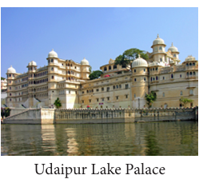
Picture, picture description begins Udaipur lake palace picture is given picture description ends.
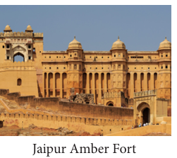
Picture, picture description begins Jaipur amber fort picture is given picture description ends.
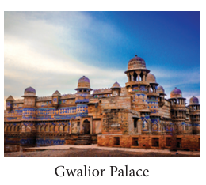
Picture, picture description begins Gwalior palace picture is given picture description ends.
The Khajuraho in Bundelkhand has 30 temples. The shikharas of the Khajuraho temples are most elegant. The exterior and interior parts of the temples are adorned with very fine sculptures. These temples are dedicated to Jain Tirthankaras and Hindu deities like Shiva and Vishnu
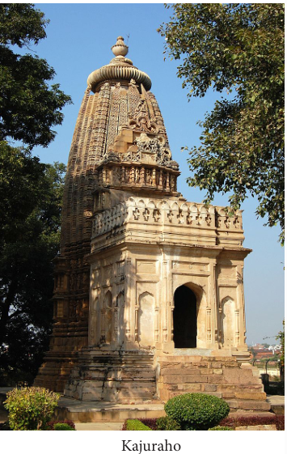
Picture, picture description begins kajuraho temple picture is given picture description ends.
DO YOU KNOW? (Box item)
There is a long epic poem Prithvirajraso, composed by the bard Chand Bardai, a few centuries later. The story goes like this: The daughter of the King of Kanauj was to marry. A suyamwara (the bride choosing the bridegroom of her choice) was held to enable her to choose her husband. But she was in love with Prithiviraj and desired to marry him. Prithiviraj was the enemy of her father. In order to insult him, the King of Kanauj had not only denied him an invitation but had placed a statue of Prithiviraj as door keeper at the entrance to his court. To the shock of everyone assembled, the princess rejected the princes present and garlanded the statue of Prithiviraj, indicating her choice. Prithiviraj, who had been hiding in the vicinity, jumped in and rode away with the princess in a horse. Later both of them were married.
Box Item)
The Raksha Bandan (Rakhi) tradition is attributed to Rajputs. Raksha (protection) Bandhan (to tie or relationship) is a festival that celebrates brotherhood and love. It is believed that if a woman ties a rakhi around the wrists of male members, it means they are treating them like brothers. Such men are placed under an obligation to protect them.
Rabindranath Tagore started a mass Raksha Bandhan festival during the Partition of Bengal (1905), in which he encouraged Hindu and Muslim women to tie a rakhi on men from the other community and make them their brothers. The exercise was designed to counter British efforts to create a divide between Hindus and Muslims
There are sixteen Hindu and Jain temples at Osian, which is 32 miles away from Jodhpur. The Jain temple at Mount Abu has a white marble hall and a central dome of 11 concentric rings and richly carved vaulted ceiling and pillars
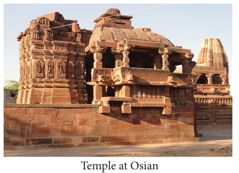
Picture, picture description begins temple at osian picture is given picture description ends.
Contribution of Palas to Culture
The Palas were adherents to the Mahayana school of Buddhism. They were generous patrons of Buddhist temples and the famous universities of Nalanda and Vikramashila. It was through their missionaries that Buddhism was established in Tibet. The celebrated Buddhist monk, Atisha (981-1054), who reformed Tibetan Buddhism, was the president of the Vikramashila monastery. The Palas also maintained cordial relations with the Hindu Buddhist state of the Shailendras of Sumatra and Java
Under Pala patronage, a distinctive school of art arose, called Pala art or Eastern Indian art. Pala artistic style flourished in present day states of Bihar and West Bengal, and also in present-day Bangladesh. It was chiefly represented by bronze sculptures and palm-leaf paintings, celebrating the Buddha and other divinities. The Pala bronze sculptures from this area played an important part in the spread of Indian culture in Southeast Asia
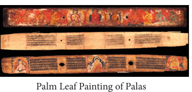
Picture, picture description begins palm leaf painting of palas picture is given picture description ends.
as a religious faith originated at Mecca in Arabia. The founder of Islam was Prophet Muhammad. The followers of Islam are called Muslims. An Islamic state, especially the one ruled by a single religious and political leader, was known as ‘Caliphate’. Caliph means a representative of the Prophet Muhammad. Two early Caliphates were ‘Umayyads’ and the ‘Abbasids’. Both the Umayyads and the Abbasids expanded their rule separately by their conquests and by preaching the principles of Islam.
In the 8th century India, the Arab presence appeared in the form of a Muslim army that conquered the Sind. But their further expansion was made impossible by the kings of Gangetic plains and the Deccan. By the end of the 9th century, with the decline of the Abbasid Caliphate, the Arab garrisons in India and elsewhere threw off Caliph’s control and began to rule independently.
The Turkish governor, Alp-Tegin, was one among them whose capital was Gh
azni (Afghanistan). His successor and son-in-law Sabuktigin wanted to conquer India from the north-west. But only his son Mahmud succeeded in this endeavour.
Mahmud of Ghazni (A.D. (Common Era) 997 - 1030)
Mahmud is said to have conducted 17 raids into India. At that time, North India was divided into number of small kingdoms. One of them was Shahi kingdom, which extended from Punjab to Kabul. The other important kingdoms were Kanauj, Gujarat, Kashmir, Nepal, Malwa and Bundelkhand. The initial raids were against the Shahi kingdom in which its king Jayapala was defeated in 1001. After his defeat, Jayapala immolated himself because he thought that this defeat was a disgrace. His successor Anandapala fought against Mahmud but was defeated in the battle of Waihind, near Peshawar, in 1008. As a result of his victory at Waihind, Mahmud extended his rule over Punjab
The subsequent raids of Mahmud into India were aimed at plundering the rich temples and cities of North India. In 1011 he raided Nagarkot in Punjab hills and Thaneshwar near Delhi
In 1018 Mahmud plundered the holy city of Mathura. He also attacked Kanauj. The ruler of Kanauj, Rajyapala, abandoned Kanauj and later died. Mahmud returned with enormous riches. His next important raid took place in Gujarat. In 1024 A.D. (CE) Mahmud marched from Multan across Rajaputana and defeated the Solanki king Bhimadeva I and plundered Anhilwad. Mahmud is said to have sacked the famous temple of Somanath, breaking the idol. Then he returned through the Sind desert. That was his last campaign in India. Mahmud died in 1030 A.D. (CE) The Ghaznavid Empire roughly included Persia, Trans-Oxyana, Afghanistan and Punjab.
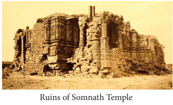
Picture, picture description begins ruins of somnath temple picture is given picture description ends.
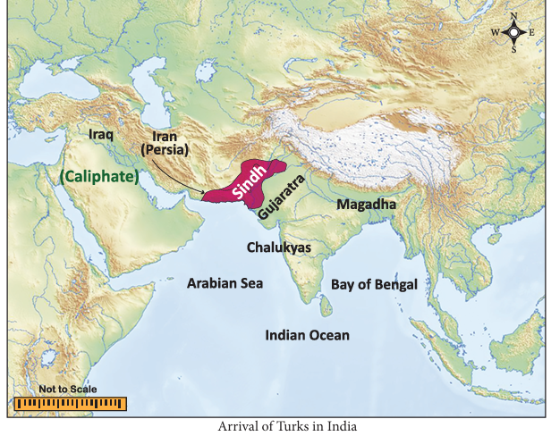
Picture, picture description begins arrival of turks in india world map is given. In This map Iraq, Iran(Persia), Caliphate, Sindh, Gujaratra, Arabian Sea, Chalukyas, Magadha, Bay of Bengal, Indian Ocean are pointed out. picture description ends.
(Box Item)
Arab Conquest of Sind and its Impact
In A.D. (CE) 712, Muhammad bin Qasim who was the commander of the Umayyad kingdom invaded Sind. Qasim defeated Dahir, the ruler of Sind, and killed him in the battle. The capital of Sind, Aror, was captured. Qasim extended his conquest further into Multan. He organised the administration of Sind. The people of Sind were given the status of ‘protected subjects’. There was no interference in the lives and religions of the people. But soon Qasim was recalled by the Caliph. The Arab scholars visited Sind and studied many Indian literary works. They translated many Sanskrit books on astronomy, philosophy, mathematics and medicine into Arabic. They learnt the numerals 0 to 9 from India. Until then, the people in the West did not know the use of zero. Through the Arabs, Europe gained more knowledge in mathematics. The importance of zero was learnt by them from India. It is believed that the people in the West and the Arabs learnt the game of chess only from the Indians
Muhammad of Ghor (1149 - 1206)
Muhammad of Ghor or Muhammad Ghori started as a vassal of Ghazni but became independent after the death of Mahmud. Taking advantage of the decline of the Ghaznavid Empire, Muhammad Ghori brought Ghazni under his control. Having made his position strong and secure at Ghazni, Muhammad turned his attention to India. Unlike Mahmud of Ghazni, he wanted to extend his empire by conquering India. In 1175 Muhammad captured Multan and occupied whole of it in his subsequent expeditions. In 1186 he attacked Punjab and captured it.
The Battle of Tarain (1191 - 1192)
Realising the grave situation in which they were caught, the Hindu princes of North India formed a confederacy under the command of Prithiviraj Chauhan. Prithiviraj rose to the occasion and defeated Muhammad in the battle of Tarain near Delhi in 1191. This was called the first battle of Tarain. To avenge this defeat, Muhammad made serious preparations and gathered a huge army. He arrived with his large force in Lahore via Peshawar and Multan. He sent a message to Prithiviraj, asking him to acknowledge his supremacy and become a Muslim. But Prithiviraj rejected the proposal and prepared his army to resist the invader. Many Hindu kings and chieftains also joined him. In the ensuing second battle of Tarain in 1192, Muhammad thoroughly routed the army of Prithiviraj who was defeated and killed.
The second battle of Tarain was a major disaster for the Rajputs. Their political prestige suffered a serious setback. The whole Chauhan kingdom now lay at the feet of the invader. The first Muslim kingdom was thus firmly established in India at Ajmer and a new era in the history of India began. After his victory over Prithiviraj at Tarain, Muhammad returned to Ghazni to deal with the threat from the Turks and the Mongols. After the death of Muhammad in 1206, his most capable general Qutb-ud-din Aibak who had been left behind in India took control of Muhammad’s territories in India and declared himself as the First Sultan of Delhi.
QR CODE IS GIVEN, QR code description begins NUMBER, R,8, W, I, B QR code description ends.
1, Choose the correct answer
1, Who wrote Prithivirajraso?
a) Kalhana
b) Vishakadatta
c) Rajasekara
d) Chand Bardai
2, Who was the first prominent ruler of Pratiharas?
a) Bhoja one
b) Naga Bhatta 1
c) Jayapala
d) Chandradeva
3, Ghazni was a small principality in Dash
a) Mangolia,
b) Turkey,
c) Persia,
d) Afghanistan
4, What was the most important cause of the invasion of Mahmud of Ghazni?
a) To destroy idolatry
b) To plunder the wealth of India
c) To spread Islam in India
d) To establish a Muslim state in India
2, Fill in the blanks
1, DASH was the founder of Vikramashila University.
2, Arabs conquered Sind in DASH.
3, The city of Ajmeer was founded by DASH.
4, The Khandarya temple is in DASH
3, Match the following
1, Khajuraho - Mount Abu
2, Sun temple – Bundelkhand
3, Dilwara Temple -- Konark
4, True or False
1, Rajputra is a Latin word.
2, King Gopala was elected by the people.
3, The temple at Mount Abu is dedicated to Lord Shiva.
4, Raksha Bandan is a festival of brotherhood.
5, Indians learnt the numerals 0 to 9 from Arabs.
5, Consider the following statements.
Tick the appropriate answer.
1, Assertion: - The tripartite struggle was to have control over Kanauj.
Reason: - Kanauj was a big city.
a) Reason is the correct explanation of Assertion
b) Reason is not the correct explanation of Assertion
c) Assertion is wrong and Reason is correct.
d) Assertion and Reason are wrong.
2, Statement 1. Mahipala could not extend his domain beyond Benaras.
Statement 2. Mahipala and Rajendra Chola were contemporaries.
a, Statement 1 is correct.
b, Statement 2 is correct.
c) Statement 1 and Statement 2 are correct.
d) Statement 1 and Statement 2 are false.
3, Assertion: - India’s Islamic period did not begin after Arab conquest of Sind in AD (CE)712.
Reason: - Gurjara Pratiharas gave a stiff resistance to Arabs
a) Reason is the correct explanation of Assertion.
b) Reason is not the correct explanation of Assertion.
c) Assertion is correct and Reason is wrong.
d) Assertion is wrong and Reason is correct.
4, Assertion: - The second battle of Tarain was lost by Prithiviraj.
Reason: -There was disunity among the Rajputs
a) Reason is the correct explanation of Assertion.
b) Reason is not the correct explanation of Assertion.
c) Assertion. is correct and Reason is wrong.
d) Assertion. is wrong and Reason is correct
5, Consider the following statements and find out which is/are correct.
1, Raksha Bandan tradition is attributed to Rajputs.
2, Tagore started a mass Raksha Bandan festival during Partition of Bengal
3, Raksha Bandan was to counter the British attempt to create a divide between Hindus and Muslims.
a) 1 is correct.
b) 2 is correct.
c) 3 is correct.
d) All the above are correct.
6, Answer in one or two sentences
1, Write about tripartite struggle over Kanauj.
2, Name any four Rajput clans.
3, Who was the founder of Pala dynasty?
4, Mention the first two early Caliphates.
5, Name the ruler of Sind who was defeated by Qasim
7, Answer the following in detail
1, What was the impact of Arab conquest of Sind? (point out any five)
8, HOTs
a. Difference between Mahmud Ghazni’s invasion and Muhammad Ghor’s invasion.
b. Find out
Table is given, Table description begins
|
First battle of Tarain |
Second battle of Tarain |
Fought in the year |
|
|
Causes for the battle |
|
|
Who defeated whom? |
|
|
What was the result? |
|
|
Table description ends.
9, Students activity
a, Word Splash
(Students discuss what they know about the words given here. They use the words from what they have learnt in a narrative form)
Harsha, Rajputs, Kanauj, Vikramashila, Prithiviraj, Caliph
b) Time Line
Write the event for the given year in each column
Advent of Islam in India
Flow chart description begins
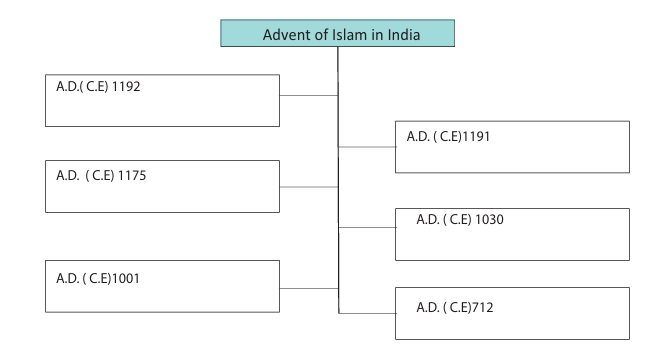
Flow chart description ends.
10, Map work
On the river map of India mark the territories ruled by Pratiharas, Chauhans, Palas and Paramaras.
11, Answer Grid
1, Who was the Shahi ruler of Punjab defeated by Mahmud of Ghazni?
Answer:
2, Rajput style of Painting is called dash
Answer:
3, How many Rajput clans were there?
Answer:
4, Who established the first Islamic empire in India? Ans:
5, Who was the first Sultan of Delhi?
Answer:
6. Where is Mecca?
Answer:
12, Life skill
1, Romila Thapar, Early India, New Delhi: Penguin, 2002.
2, Burton Stein, A History of India, New Delhi: Oxford University Press, 2004 (Reprint).
3, S.K. Singh, History of Medieval India, New Delhi: Axis Books, 2013.
4, K.V Rajendra, Ancient and Medieval Indian History, New Delhi: Pacific Publication, 2010
QR CODE , QR code description begins IS GIVEN, NUMBER, 7,9, V,5,1 QR code description ends.
To trace the origin of the later Cholas and the later Pandyas
To know about the prominent rulers of both the kingdoms
To acquaint with their administrative system
To understand the social, economic and cultural development during their reign
Introduction
The Cholas are one among the popular and well-known Tamil monarchs in the history of South India. The elaborate state structure, the extensive irrigation network, the vast number of temples they built, their great contributions to art and architecture and their overseas exploits have given them a pre-eminent position in history.
Revival of the Chola Rule
The ancient Chola kingdom reigned supreme with the Kaveri delta forming the core area of its rule and with Uraiyur (present day Tiruchirappalli) as its capital. It rose to prominence during the reign of Karikala but gradually declined under his successors.
In the 9th century Vijayalaya, ruling over a small territory lying north of the Kaveri, revived the Chola Dynasty. He conquered Thanjavur and made it his capital. Later Rajendra I and his successors ruled the empire from Gangaikonda Cholapuram, the newly built capital.
Rajaraja 1 (A.D. (Common Era ) 985 - 1014) was the most powerful ruler of Chola empire and also grew popular beyond his times. He established Chola authority over large parts of South India. His much-acclaimed naval expeditions led to the expansion of Cholas into the West Coast and Sri Lanka. He built the famous Rajarajeswaram (Brihadeshwara) Temple in Thanjavur. His son and successor, Rajendra Chola 1 (A.D. (Common Era) 1014 - 1044, matched his father in his ability to expand the empire. The Chola empire remained a powerful force in South India during his reign.
After his accession, his striking military expedition was to northern India, capturing much territory there. He proclaimed himself the Gangaikondan (conqueror of the Gangai region). The Gangaikonda Cholapuram temple was built to commemorate his victories in North India. The navy of Rajendra Chola enabled him to conquer the kingdom of Srivijaya (southern Sumatra). Cholas’ control over the seas facilitated a flourishing overseas trade.
Decline of the Chola Empire
Rajendra Chola’s three successors were not capable rulers. The third successor Veerarajendra’s son
Athirajendra was killed in civil unrest. With his death ended the Vijayalaya line of Chola rule. On hearing the death of Athirajendra, the Eastern Chalukya prince Rajendra Chalukya seized the Chola throne and began the rule of Chalukya-Chola dynasty as Kulothunga 1. Kulothunga established himself firmly on the Chola throne soon eliminating all the threats to the Chola Empire. He avoided unnecessary wars and earned the goodwill of his subjects. But Kulothunga lost the territories in Ceylon. The Pandya territory also began to slip out of Chola control. Kanchipuram was lost to the Telugu Cholas. The year 1279 marks the end of Chola dynasty when King Maravarman Kulasekara Pandyan 1 defeated the last king Rajendra Chola III and established the rule of the Pandyas in present-day Tamil Nadu.
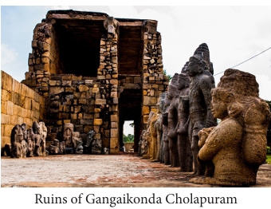
Picture, picture description begins ruins of gangaikonda cholopuram picture is given picture description ends.
Box item
Matrimonial alliances between the Cholas and the Eastern Chalukyas began during the reign of Rajaraja I. His daughter Kundavai was married to Chalukya prince Vimaladitya. Their son was Rajaraja Narendra who married the daughter of Rajendra Chola named Ammangadevi. Their son was Kulothunga 1.
Administration
The central administration was in the hands of king. As the head of the state, the king enjoyed enormous powers. The king’s orders were written down in palm leaves by his officials or inscribed on the temple walls. The kingship was hereditary in nature. The ruler selected his eldest son as the heir apparent. He was known as Yuvaraja. The Yuvarajas were appointed as Governors in the provinces mainly for administrative training.
The Chola rulers established a well organised system of administration. The empire, for administrative convenience, was divided into provinces or mandalams. Each mandalam was sub-divided into naadus. Within each naadu, there were many kurrams (groups of villages). The lowest unit was the gramam (village)
Local Governance
Local administration worked through various bodies such as Urar, Sabhaiyar, Nagarattar and Nattar. With the expansion of agriculture, numerous peasant settlements came up on the countryside. They were known as Ur. The Urar, who were landholders acted as spokesmen in the Ur. Sabhaiyar in Brahman villages also functioned in carrying out administrative, financial and judicial functions. Nagarattar administered the settlement of traders. However, skilled artisans like masons, blacksmiths, goldsmiths, weavers and potters also lived in Nagaram. Nattar functioned as an assembly of Nadu and decided all the disputes and issues pertaining to Nadu.
The assemblies in Ur, Sabha, Nagaram and Nadu worked through various committees. The committees took care of irrigation, roads, temples, gardens, collection of revenue and conduct of religious festivals.
Uttiramerur Inscriptions
Uttiramerur presently in Kanchipuram district was a Brahmadeya village (land grants given to Brahmins). There is a detailed description of how members were elected to the committees of the village sabha in the inscriptions found there. One member was to be elected from each ward. There were 30 wards in total. The eligibility to contest was to men in the age group of 35–70, well-versed in vedic texts and scriptures, and also owned land and house. The process of election was as follows: The names of qualified candidates from each ward were written on the palm-leaf slips and put into a pot. The eldest of the assembly would engage a boy to pull out one slip and declare his name. Various committees were decided in this way.
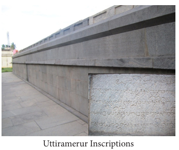
Picture, picture description begins uttiramerur inscription picture is given picture description ends.
-
QR CODE IS GIVEN, QR code description begins NUMBER, U, O, J, F, L QR code description ends.
Revenue
The revenue of the Chola state came mainly from the land. The land tax was known as Kanikadan. The Chola rulers carried out an elaborate survey of land in order to fix the government’s share of the land revenue. One third of produce was collected as land tax. It was collected mostly in kind. In addition to land tax, there were taxes on profession and tolls on trade
Social Structure Based on Land Relations
The Chola rulers gifted tax-free lands to royal officials, Brahmins, temples (devadana villages) and religious institutions. Land granted to Jain institutions was called pallichchandam. There were also of vellanvagai land and the holders of this land were called Vellalars. Ulu kudi, a sub-section of Vellalar, could not own land but had to cultivate Brahmadeya and vellanvagai lands. The holders of vellanvagai land retained melvaram (major share in harvest). The ulu-kudi got kil-varam (lower share). Adimai (slaves) and panicey-makkal (labourers) occupied the lowest rung of society. In the intermediate section came the armed men and traders
Irrigation
Cholas gave importance to irrigation. The 16 mile long embankment built by Rajendra Chola in Gangaikonda Cholapuram is an illustrious example. Vati-vaykkal, a criss-cross channel, is a traditional type of harnessing rain water in the Cauvery delta. Vati is a drainage channel and a vaykkal is the supply channel. The commonly owned village channel was called ur vaykkal. The nadu level vaykkal is referred to as nadu-vaykkal. The turn-system was in practice in distributing the water.
Religion
Chola rulers were ardent Saivites. Hymns, in praise of the deeds of Lord Siva, were composed by the Saiva saints, the Nayanmars. NambiyandarNambi codified them, which came to be known as the Thirumurai.
Temples
The Chola period witnessed an extensive construction of temples. The temples in Thanjavur, Gangaikonda Cholapuram and Darasuram are the repository of architecture, sculpture, paintings and iconography of the Chola art. Temples during the Chola period were not merely places of worship. They were the largest landholders. Temples promoted education, and devotional forms of art such as dance, music and drama. The staff of the temples included temple officials, dancing girls, musicians, singers, players of musical instruments and the priests.
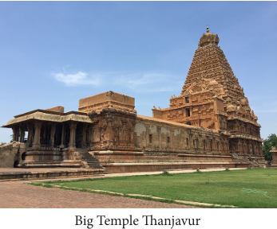
Picture, picture description begins big temple Thanjavur picture is given picture description ends.
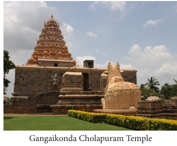
Picture, picture description begins gangaikonda cholapuram temple picture is given picture description ends.
Cholas as Patrons of Learning
Chola kings were great patrons of learning. Rajendra 1, established a Vedic college at Ennayiram (now in Villupuram District). There were 340 students learning the Vedas, grammar and Upanishads under 14 teachers. This example was later followed by his successors and as a result two more such colleges had been founded, at Tirubuvanai near present-day Puducherry and Tirumukkoodal in present-day Chengalpattu district, in 1048 and 1067 respectively. The great literary works Periyapuranam and Kamba Ramayanam belong to this period.
Trade
There was a flourishing trade during the Chola period. Trade was carried out by two guild-like groups: anju-vannattar and mani gramattar. Anju-vannattar comprised West Asians, Arabs, Jews, Christians and Muslims. They were maritime traders and settled on the port towns all along the West Coast. It is said that mani-gramattar were the traders engaged in inland trade. In due course, both groups merged under the banner of ai-nutruvar and disai-ayirattu-ai-nutruvar functioning through the head guild in Ayyavole, Karnataka. This ai-nutruvar guild operated the maritime trade covering South-East Asian countries.
Through overseas trade with South-East Asian countries elephant tusks, coral, conch transparent glass, betel nuts, cardamom, opaque glass, cotton stuff with coloured silk threads were imported. The items exported from here were sandalwood, ebony, condiments, precious gems, pepper, oil, paddy, grains and salt.
Introduction
Pandyas were one of the three ancient Tamil dynasties that ruled southern India since the 4th century B.C. (BCE) but intermittently. Korkai, associated with pearl fisheries, is believed to have been their early capital and port. They moved to Madurai later, as many early Tamil inscriptions of Pandyas have been unearthed in Madurai and its surroundings. Under the Pandya kings of the Sangam Age, Madurai was a great centre of culture. Poets and writers of Tamil language gathered there and contributed to the development of Tamil Classics. The Pandyas had re-established their strong position in south Tamil Nadu by the end of the 6th century A.D. (CE), after eliminating the rule of Kalabhras. But they could not resist the rising power of the later Cholas who ruled South India from 9th to 13th century. Thereafter taking advantage of the decline of Chola power, the later Pandyas re-established their authority. T heir rule continued until 16th century.
Revival of Pandya Kingdom (A.D. (CE) 600 - 920)
Kadunkon recovered Pandya territory from the Kalabhras towards the close of 6th century. He was succeeded by two others. Arikesari Maravarman was the first strong Pandya ruler who ascended the throne in A.D. (CE) 642. He was a contemporary of Mahendravarman1 and Narsimahvarman 1. Inscriptions and copper plates praise his victory over his counterparts: Cheras, Cholas, Pallavas and Sinhalese. Arikesari Maravarman is identified with the Kun Pandian, the persecutor of Jains.
After Arikesari, the greatest of the dynasty was Jatila Parantaka Nedunjadayan (Varaguna 1) (756-815), the donor of the Velvikkudi plates. Nedunjadayan expanded the Pandya territory to include Thanjavur, Tiruchirappalli, Salem and Coimbatore districts. Nedunjadayan’s successors Srimara Srivallabha and Varaguna 2, were successively defeated by Pallavas. Later they could not face the rising Chola dynasty under Parantaka I. Parantaka I defeated the Pandya king Rajasimha II who fled the country in 920. Thus ended the Pandya rule revived by Kadungon.
Box Item
Saivite saint Thirugnanasambandar converted Arikesari from Jainism to Saivism. On his conversion, Arikesari is alleged to have impaled Jains on stakes. The anti-Jain attitude of Arikesari after his conversion to Saivism cannot be doubted.
Rise of Later Pandyas (1190 - 1310)
The Chola viceroyalty became weak in Pandya country after the death of Adhirajendra (the last king of Vijayalaya line). Eventually the Pandya kingdom could emerge as the only leading Tamil dynasty in the 13th century. Madurai continued to be their capital. Now Kayal was their great port. Marco Polo, a famous traveller from Venice, visited Kayal twice, in 1288 and 1293. He tells us that this port town was full of ships from Arabia and China and bustling with business activities
Marco Polo hailed the Pandyan Kingdom as ‘the richest and the most splendid province in the world’. Together with Ceylon, he added, it ‘produced most of the gems and pearls that are found in the world’. In his travel account he recorded the incidents of sati and the polygamy practiced by the kings.
Sadaiyavarman Sundarapandyan
The illustrious ruler of the second Pandya Kingdom was Sadaiyavarman (Jatavarman) Sundarapandyan (1251 to 1268). He brought the entire Tamil Nadu under his rule, which extended up to Nellore in Andhra. He held the Hoysalas in check. The Chera ruler, the chief of Malanadu, accepted his feudatory position and paid tribute to Sundarapandyan. Emboldened by the decline of the Chola state, the Boja King of Malwa region Vira Someswara challenged Sundarapandyan. In a war at Kannanur, Sundarapandyan defeated Someswara. Sundarapandyan succeeded in establishing his authority over the chieftains of Cuddalore, Kanchipuram in northern Tamil Nadu, Arcot and Salem in the western region.
There were two or three co-regents who ruled simultaneously along with Sundarapandyan: VikramaPandyan and ViraPandyan. After Sundarapandyan, MaravarmanKulasekaran ruled successfully for a period of 40 years, giving the country peace and prosperity. He had two sons. The king’s appointment of ViraPandyan as a co-regent provoked the other son Sundara Pandyan who killed his father Maravarman Kulasekaran. In the civil war that ensued, ViraPandyan won and became firmly established in his kingdom. The defeated SundaraPandyan fled to Delhi and took refuge under the protection of Ala-ud-din Khalji. This provided the opening for the invasion of Malik Kafur.
After Malik Kafur’s invasion, the Pandyan Kingdom came to be divided among a number of kings from the main ruling Pandya’s family. In Madurai, a Muslim State subordinate to the Delhi Sultan came to be established.
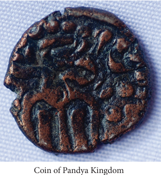
Picture, picture description begins coin of pandya kingdom picture is given picture description ends.
Polity and Society
State
Pandya kings preferred Madurai as their capital. Madurai has been popularly venerated as Koodal. The kings are traditionally revered as Koodal-kon, Koodal Nagar Kavalan. The Pandyas derived military advantage over their neighbours by means of their horses. They imported these horses through Arabs with whom they had commercial and cultural contact.
The king claimed that he was ruling according to Manu Sastra. This doctrine supported the social hierarchy in the society. Kings and local chiefs created Brahmin settlements called Mangalam or Chatur-vedi-mangalam with irrigation facilities.
The actual landowning groups are described as the Bumiputtirar, otherwise called the vellalar. Historically they were locals and hence they were referred to as nattu-makkal. The communal assembly of this group is Cittira Meli Periyanattar
Royal Officials
A band of officials executed the royal orders. The prime minister was uttara-mantri. The historical personalities like Manickavasagar, Kulaciraiyar and Marankari worked as ministers. The royal secretariat was known as eluttu-mandapam. The most respected officials were maran-eyinan, sattan-ganapathy, enathi-sattan, tira-tiran, murthi-eyinan and others. The titles of military commanders were palli-velan, parantakan-palli-velan, maran-adittan and tennavan-tamilvel.
Administrative Divisions
Pandy nadu, as in Chola state, consisted of many provinces known as vala-nadus, which, in turn, were divided into many nadus and kurrams. The administrative authorities of nadus were the nattars. Nadu and Kurram contained settlements, viz. mangalam, nagaram, ur and kudi, where different social groups inhabited.
Village Administration
An inscription from Manur (Tirunelveli district) dated A.D. (CE) 800 provides an account of village administration. It looks similar to Chola’s local governance that included village assemblies and committees. Both civil and military powers seem to have been vested in the same person
Irrigation
The Pandya rulers created a number of irrigation sources. On either side of the rivers Vaigai and Tamiraparani, channels leading to the irrigation tanks were built. In southern Tamilnadu, like the Cholas, Pandyas introduced the new irrigation technology. Irrigation works were done by local administrative bodies, local chiefs and officials. Repairs were mostly undertaken by local bodies. Sometimes, traders also dug out tanks for irrigation.
Religion
Pandyas extended patronage to vedic practices. Velvikkudi copper plates as well as inscriptional sources mention the rituals like Asvameda yaga, Hiranya garbha and Vajapeya yaga, conducted by every great Pandya king. The impartiality of rulers towards both Saivism and Vaishnavism is also made known in the invocatory portions of the inscriptions. Temples of both sects were patronised through land grant, tax-exemption and renovation.
The great Saiva and Vaishnava saints (Nayanmaras and Alwars) combined contributed to the growth of Tamil literature and spiritual enlightenment. The period was marked by intense religious conflict. The Bhakti movement of the time prompted the heterodox scholars for a debate. Many instances of the defeat of Buddhists and Jains in such debates are mentioned in Bhakti literature. The Pandya kings of the period supported and promoted Tamil and Sanskrit.
Temples
Medieval Pandyas and later Pandyas did not build any new temples but maintained the existing temples, enlarging them with the addition of gopuras, and mandapas. The monolithic mega size ornamented pillars are the unique feature of the medieval Pandya style. The sculptures of Siva, Vishnu, Kotravai, Ganesa and Subramanyar are the best specimens in these temples. Pandyas specially patronised the historic Meenakshi temple at Madurai and kept expanding its premises by adding gopuras and mandapas
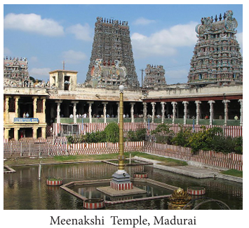
Picture, picture description begins Meenakshi temple at Madurai is given picture description ends.
Trade
Arab settlements on the west coast of southern India, from 7th century, had led to the expansion of their trade connection to the east coast because the governments of the east coast pursued a more liberal and enlightened policy towards overseas traders. Their charters exempted traders from various types of port dues and tolls. In Kayal, there was an agency established by an Arab chieftain by name Malik-ul-Islam Jamal-ud-din. This agency facilitated availability of horses to Pandya kings.
In 13th and 14th centuries, horse trade became brisk. Marco Polo and Wassaff state that the kings invested in horses as there was a need of horse for ceremonial purposes as well as for fighting wars. Those who were trading in horses were called kudirai chetties. They were active in maritime trade also. The busiest port town under the Pandyas was Kayal Pattinam (now in Thoothukudi district) on the east coast. Gold coins were in circulation as the trade was carried through the medium of gold. It was variously called kasu, kalanchu and pon.
Box item
The vast trade in horses of that time has been recorded by Wassaff. He writes: as many as 10,000 horses were imported into Kayal and other ports of India of which 1,400 were to be of Jamal-ud-din’s own breed. The average cost of each horse was 220 dinars of 'red gold'
1, Choose the Correct answer
1, Who revived the later Chola dynasty?
a) Vijayalaya,
b) Rajaraja 1,
c) Rajendra 1,
d) Athirajendra
2, Who among the following Pandya rulers is known for ending the Kalabhra rule?
a) Kadunkon,
b) ViraPandyan,
c) Kun Pandyan,
d) Varaguna
3, Which of the following was the lowest unit of Chola administration?
a) Mandalam,
b) Nadu,
c) Kurram,
d) Ur
4, Who was the last ruler Vijayalaya line of Chola dyanasty?
a] VeeraRajendra,
b) Rajadhiraja,
c) AthiRajendra,
d) Rajaraja 2
5, An example of Chola architecture can be seen at dash
a] Kannayiram,
b) Uraiyur,
c) Kanchipuram,
d) Thanjavur
6, To which of the following, Marco Polo went in the last decade of 13th century in India?
a] Chola mandalam,
b) Pandya country,
c) Kongu region,
d) Malainadu
2, Fill in the blanks
1, DASH built the famous Brihadeshwara Temple at Thanjavur.
2, DASH established a Vedic college at Ennayiram.
3, DASH was the donor of Velvikudi copper plates.
4, The royal sectretariat of Pandya kingdom was known as DASH.
3, Match the Following
1, Madurai - Inland traders
2, Gangaikonda Cholapuram - Maritime traders
3, Anju- Vannattar - Capital of Cholas
4, Mani- gramattar- Capital of Pandyas
4, True or False
1, A Muslim state subordinate to Delhi Sultan was in Madurai.
2, Koodal – nagar Kavalan was the title of a Pandya king.
3, Chola kingdom was situated in Vaigai delta.
4, Kulothunga I belonged to Chalukya – Chola dynasty.
5, The elder son of the Chola king was called Yuvaraja.
5, Consider the following statements.
Tick the appropriate answer.
1, Which of the following statements about Later Cholas are correct?
1, They had a system of Local self-government.
2, They maintained a strong navy.
3. They were the followers of Buddhism.
4, They built big temples.
a) 1,2 and 3,
b) 2,3 and 4,
c) 1,2 and 4,
d) 1,3 and 4
2, Which of the following statements are true with regard to Rajendra Chola?
1, He assumed the title Gangaikonda Chola.
2, He conquered Southern Sumatra.
3, He is credited with consolidating the Chola power.
4, His naval power enabled him to conquer Srivijaya
a) 1 and 2,
b) 3 and 4,
c) 1,2 and 4,
d) All the above
3, Assertion: The Yuvarajas were appointed Governors in the provinces.
Reason: This was done for their training in administration.
a) Reason is the correct explanation of Assertion.
b) Reason is not the correct explanation of Assertion.
c) Assertion is wrong and Reason is correct.
d) Assertion and Reason are wrong.
4, Arrange the following administration divisions in descending order.
1, Nadu,
2, Mandalam,
3, Ur,
4, Kurram
5, Arrange the events in chronological order.
1, Maravarman appointed Virapandyan as co – regent.
2, Civil war broke out.
3, A Muslim State was established in Madurai.
4, MaravarmanKulasekaran had two sons – Virapandyan and Sundrapandyan
5, SundraPandyan sought help from Ala–ud-din Khalji.
6, Malik Kafur invaded Madurai.
6, Find out
Brahmadeya, Devadana, Pallichchandam, Vellanvaga
6, Answer in one or two sentences
1, What were the items exported during the later Chola period?
2, What was called Chatur-vedi-mangalam?
3, Write about Kanikadan
7, Answer the following in detail
1, Highlight any five aspects of Cholas’ legacy.
8, HOTs
1, Chola kings were great patrons of learning:
Support the statement with details.
Flow chart description begins
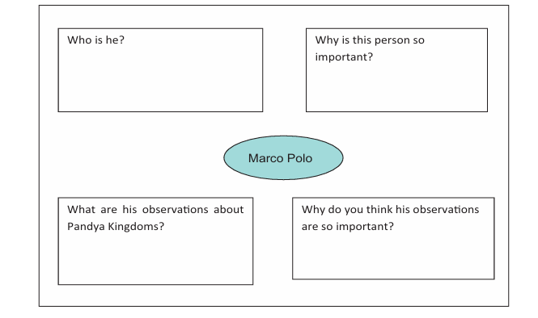
Flow chart description ends
Marco Polo
1, Who is he?
2, Why is this person so important?
3, What are his observations about Pandya Kingdoms?
4, Why do you think his observations are so important?
9, Students activity
Who am I?
1, I was responsible for Malik Kafur invasion.
2, I built 16-mile embankment-lake in Gangaikonda Cholapuram.
3, I am a water supply channel.
4, I codified Thirumurai.
5, I was a great port. Marco Polo visited me twice.
10, Answer Grid
1, Name the two literary works of Chola period.
Answer:
2, Which port is associated with pearl fishery?
Answer:
3, What do kasu, kalanchu and pon refer to?
Answer:
4, In which district is Kayal -Pattinam located?
Answer:
5, Who was the Pandya king, defeated by Parantaka I?
Answer:
6, Where is the famous Meenakshi temple located?
Answer
11, Field trip
1, Visit any one temple built during Chola or Pandya period and see its magnificence.
1, K.A Nilakanda Sastri, A History of South India, New Delhi: Oxford University Press, 2002.
2, Y. Subbarayalu, South India under The Cholas, New Delhi: Oxford University Press, 2012.
3, R Champakalakshmi, Trade, Ideology and Urbanization South India- 300 BC to AD 1300, New Delhi: Oxford University Press, 1996.
4, Satish Chandra, History of Medieval India, New Delhi: Orient Blackswan, 2010
QR CODE IS GIVEN, QR Code description begins NUMBER, D,2, F, V, L .QR Code description ends.
To acquaint ourselves with Turkish Sultans of various dynasties who ruled India from Delhi
Their military conquests and extension of sovereignty
Administration of the Delhi Sultanate
Art and architecture of this period
During the eleventh century, the Turkish horsemen pillaged northern India and due to their persistent campaigns, they succeeded in seizing political control of the Gangetic plain by the next century. Though the success of their conquests could be attributed to their audacity and ferocity, their success is really due to the failure of Indians to defend themselves and their territories. Indians viewed each other with distrust, failing to take note of the success of Islam in early years of its spread. The superior military might of Muslim soldiers was yet another factor that contributed to success in their conquests. In this lesson, we discuss how Turkish warriors set about founding and consolidating their Islamic rule till the advent of Babur
Muslim rule in India was established by Muhammad Ghori in 12th century A.D. (CE). As he had no sons, he nurtured special slaves called bandagan (a Persian term used for slaves purchased for military service). These slaves were posted as governors and they were later raised to the status of Sultans. After Ghori’s death in 1206, one of his slaves Qutb-ud-din-Aibak who had been left behind by Muhammad Ghori to govern the territories he had conqured, proclaimed himself ruler of the Turkish territories in India. He laid the foundation of the Slave Dynasty. This dynasty is also known as Mamluk dynasty. Mamluk is an Arabic word meaning ‘‘slave’’. Qutb-ud-din-Aibak, Shams-ud-din-Iltutmish and Ghiyas-ud-din-Balban were the three great Sultans of this dynasty. The Slave Dynasty ruled over the sub-continent for about 84 years
Qutb-ud-din-Aibak (1206 - 1210)
Qutb-ud-din-Aibak began his rule by establishing Lahore as the capital of his kingdom. Later he shifted his capital to Delhi. He was active all through his rule in Delhi conquering new territories and suppressing rebellions. He personally led military campaigns to the central and western Indo-Gangetic plain (north India) and left the conquest of the eastern Gangetic Plain (Bihar, Bengal) to the care of Bakhtiar Khalji. Aibak built the Quwwat-ul Islam Masjid (mosque) in Delhi. This mosque is considered to be the oldest in India. He also laid the foundation of the Qutb-Minar, but he was unable to complete it. It was later finished by his son-in-law and his successor Iltutmish. Aibak died of injuries received during an accidental fall from a horse, while playing polo in 1210.
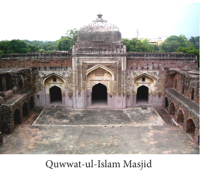
Picture, picture description begins quwwat-ul-islam masjid picture is given picture description ends
Iltutmish (1210 - 1236)
Aibak’s son Aram Shah proved incompetent and so the Turkish nobles chose Iltutmish, the son-in-law of Aibak as the Sultan, who served as a military commander of Aibak. Iltutmish f irmly established his control over the territories by suppressing rebellions. It was during his reign that the threat of Mongols under Chengiz Khan loomed large over the frontiers of India. He averted the impending danger by refusing to provide shelter to the Kwarezm Shah Jalal ud-din, who had been driven out by Chengiz Khan. In order to counter the possible attack of the Mongols, Iltutmish organised Turkish nobility into a select group of 40 nobles known as chahalgani or The Forty.
Iltutmish granted iqtas (land) to members of his army. Iqta is the land granted to army officials in lieu of a regular wage. The iqta holder is called the iqtadar or muqti who had to provide the Sultan with military assistance in times of war. The iqtadar collected revenue from his iqta to meet the cost of maintaining his troops and horses
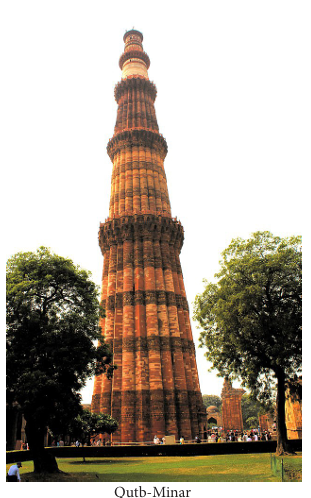
Picture, picture description begins qutub- minar picture is given picture description ends
Iltutmish completed the construction of the Qutb-Minar, started by Aibak. Iltutmish died in April 1236 after ruling for 26 years
Razia (1236 - 1240)
As the most capable son of Iltutmish, Rukn ud-din-Firuz, was dead, Iltutmish nominated his daughter Razia Sultana as his successor to the throne of Delhi. Razia was an able and brave f ighter. But she had a tough time with Turkish nobles as she favoured non-Turkish nobles. She also faced the situation of the ferocious Mongols raiding Punjab during her reign.
Razia made an Ethiopian slave named Jalal-ud-din Yakut as her personal attendant and started trusting him completely. This led to a revolt of the Turkish nobles who conspired against her and got her murdered in 1240.
Ghiyas-ud-din Balban (1266 - 1287)
After Razia, three weak rulers in succession ascended the throne. After them came Ghiyas ud-din Balban. Balban abolished The Forty as it was hostile to him. He established a department of spies to gather intelligence about the conspirators and the trouble makers against his rule. He dealt with insubordination and defiance of royal authority sternly. Tughril Khan, a provincial governor of Bengal, who raised a banner of revolt against Balban, was captured and beheaded. He was ruthless in dealing with enemies like Meos of Mewat (a Muslim Rajput community from north-western India). Balban, however, took care to maintain cordial relationship with the Mongols. He obtained from Hulagu Khan, a grandson of Chengiz Khan and the Mongol viceroy in Iran, the assurance that Mongols would not advance beyond Sutlej.
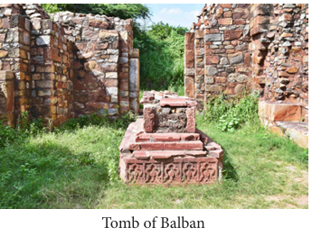
Picture, picture description begins tomb of balban picture is given picture description ends
Balban built forts to guard his empire against the Mongol attacks. He patronised the famous Persian poet Amir Khusru. Balban died in 1287. Balban’s son Kaiqubad turned out to be weak. In 1290 Malik Jalal-ud-din Khalji, the commander of the army, assumed the office of Naib (a deputy to the Sultan) and ruled the kingdom in the name of Kaiqubad. Then one day, Jalal-ud-din sent one of his officers and had Kaiqubad murdered. Jalal-ud-din then formally ascended the throne. With him began the rule of Khalji dynasty
Jalal-ud-din Khalji (1290 - 1296)
There were many military campaigns during the reign of Jalal-ud-din. But they were mostly organised and led by his nephew, Ala ud-din, the governor of Kara. One significant military expedition was against the Deccan kingdom Devagiri. Ala-ud-din, after defeating the Yadava king Ramachandra, plundered the city and returned with huge wealth. Ala ud-din treacherously killed Jalal-ud-din after buying off the prominent nobles and important commanders with the wealth he had brought from the Deccan and declared himself as the Sultan of Delhi in 1296
Ala-ud-din Khalji (1296 - 1316)
Ala-ud-din Khalji consolidated the Delhi Sultanate. The range of his conquests is impressive: in the Punjab (against the Mongols), in Rajasthan and in Gujarat. With his northern frontiers secure, he sent his chief lieutenant Malik Kafur into the southern parts who took even the distant Madurai in 1310. The Yadavas of Devagiri, the Kakatias of Warangal, the Hoysalas of Dwarasamudra and the Pandyas of Madurai accepted Ala-ud-din’s suzerainty.
Ala-ud-din’s political and administrative reforms were as impressive as his military conquests. Ala-ud-din undertook a survey of the agrarian resources around his capital and f ixed a standard revenue demand. He entrusted the task of collecting the revenue to the military officers. This measure deprived the local chiefs and rajas of their time memorial privilege. Ala-ud-din established a system of forced procurement of food grains for Delhi and other garrison centres. The procurement prices were f ixed and grain collected as tax was stored in state granaries. In order to ensure the enforcement of his new regulations, he employed spies who were responsible to report to him directly.
Ala-ud-din died in 1316. The failure of his successors to retain power led to the seizure of power by Ghiyas-ud-din Tughluq, who founded the Tughluq dynasty
Box item
Sack of Chittor (1303): When Ala-ud-din’s army overwhelmed the Rajput army in Chittor and in the context of threat of defeat, the men and women of the fortress, in accordance with their old custom, performed the rite of jauhar. According to this custom, left with no other way to survive, the men would go out and die in the field of battle and women would burn themselves on a pyre.
QR Code is given, QR Code description begins Number, V, L, 7, P, Z QR code description ends.
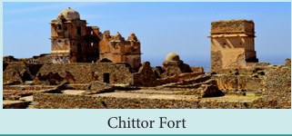
Picture, picture description begins picture of chitoor fort is given picture description ends.
Ghiyas-ud-din (1320 - 1324)
One of the major tasks of Ghiyas-ud din as the Sultan was to recover the territories that the Sultanate had lost during the turmoil following the death of Ala-ud-din. Ghiyas ud-din Tughluq sent his son Jauna Khan to f ight against Warangal. Jauna Khan defeated Pratabarudra of Warangal and returned with a rich booty. With this looted wealth, Ghiyas-ud din is said to have laid the foundation of the city Tughluqabad near Delhi. However, as Ala-ud din treacherously killed his uncle, Jauna Khan was said to have killed his father and ascended the throne with title Muhammad-bin-Tughluq in 1325
Muhammad-bin-Tughluq (1325 - 1351)
Muhammad-bin-Tughluq was a learned man. Yet he was a person of cruelty. Ala-ud din had conquered, looted and left the old ruling families as his dependents. In contrast, Muhammad Tughluq dreamt of making the whole of the subcontinent his domain. With the view to facilitating extended sovereignty, he shifted his capital from Delhi to the centre of the kingdom, namely Devagiri. He also changed its name to Daulatabad. When Muhammad himself decided that the move was a mistake, he ordered a return to Delhi as the capital again. When Ibn Battuta, the Morocco traveller who was with the Sultan, returned to Delhi, he found Delhi ‘empty, abandoned and had but a small population’
Tughluq changed the Ala-ud-din’s system of revenue collections in grain and ordered that land revenue, which was increased, should henceforward be collected in money. This proved disastrous during famines. When he discovered that the stock of coins and silver was inadequate for minting, he issued a token currency in copper. Counterfeiting soon became order of the day and, as a result, the entire revenue system collapsed. Trade suffered as foreign merchants stopped business. This forced Sultan to withdraw the token currency and pay gold and silver coins in exchange. This move led the state to become bankrupt. Tughluq increased land tax in the Doab region, which triggered peasant revolts. As the revolts were cruelly dealt with, peasants abandoned cultivation, which resulted in the outbreak of frequent famines
Tughluq ruled as Sultan for 25 years. During his long reign, he had to face many revolts of the provincial governors. The Governors of Awadh, Multan and Sind revolted and declared themselves independent. In South India, several states arose. The new Daulatabad and the conquered territories around them were declared independent sultanate called Bahmani. Its founder after whom it was named, was a soldier formerly in Tughluq service. Madurai was proclaimed a separate sultanate in 1335. Bengal became independent in 1346. Tughluq died on 23 March 1351
Box Item
When Muhammad-bin-Tughluq moved his capital from Delhi to Daulatabad, he displaced all the citizens of Delhi and also the cattle.
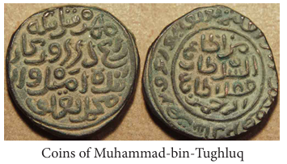
Picture, picture description begins coins of Muhammad-bin-tughluq picture is given picture description ends.
Firoz Shah Tughluq (1351 - 1388)
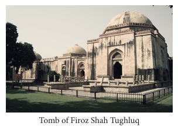
Picture, picture description begins tomb of firoz shah Tughluq picture is given picture description ends.
Firoz, the son of Ghiyas-ud-din’s younger brother, succeeded Muhammad-bin-Tughluq. Firoz could neither suppress revolts nor win back the provinces that had broken away. He also showed no interest in re-conquering the southern provinces. He refused to accept an invitation (c. 1365) from a Bahmani prince to intervene in the affairs of the Deccan. Firoz rewarded Sufis and other religious leaders generously and listened to their advice. He also created charities to aid poor Muslims, built colleges, mosques, and hospitals. He adopted many humanitarian measures. He banned inhuman punishments and abolished taxes not recognised by Muslim law.
He promoted agriculture by waiving off the debts of the agriculturalists and constructing many canals for irrigation. He laid out 1200 new gardens and restored 30 old gardens of Ala ud-din-Khalji. He had built new towns such as Firozabad, Jaunpur, Hissar and Firozpur.
Despite adopting a peaceful approach and taking efforts to organise the Sultanate well, he had to spend his last days in unhappiness. His own son Muhammad Khan revolted against him and Firoz Shah died in September 1388, at the age of 83
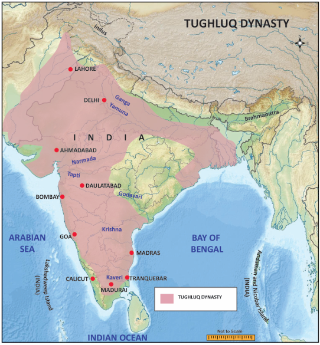
Picture, picture description begins India political map is given, in that map depicting the parts of Tughluq dynasty. Sush as, Lahore, Delhi, Ahmadabad, Daulatabad, Bombay, Goa, Calicut, Madurai, Tranquebar, Madras are pointed out. picture description ends.
Timur’s Invasion (1398)
The sacking and massacre by Tamerlane or Timur of Delhi came a decade after Firuz Shah Tughluq died. As a ruler of the region around Samarkand in Central Asia, Timur had occupied some parts in the north-west of India. Taking advantage of India’s weakness, he entered India in December 1398 and plundered Delhi. Punjab, besides the Delhi city, was the province that suffered most by Timur’s raid. Timur, apart from carrying huge wealth in the form of gold, silver, jewels, also took along Indian artisans like carpenters and masons to work on monuments in Samarkand.
Though the Sultanate fragmented into a number of independent kingdoms, it endured for 114 years more, till the Mughal invasion. Before leaving Delhi, Timur had left behind his representative Khizr Khan as the governor of the territories he had conquered (Delhi, Meerut and Punjab). He founded the Sayyid Dynasty in 1414, which lasted till 1451. The last ruler of this dynasty, Ala-ud-din Alam Shah, abdicated the throne in 1451. This gave Bahlol Lodi, then the governor of Sirhind (Punjab), the opportunity to become the new Sultan of Delhi, leading to the establishment of Lodi dynasty
In 1489, Bahlol Lodi was succeeded by his son Sikandar Lodi. Sikandar was a patron of arts and learning. He founded the city of Agra and made it his capital. He died in 1517 and was succeeded by his son, Ibrahim Lodi, who was defeated by Babur in 1526 in the Panipat battle. Thus the Lodi dynasty and the Delhi Sultanate were ended by Babur who went on to establish the Mughal Empire in India
Box Item
Islamic art and architecture: The mansions of high-ranking Muslim nobles, soldiers and officials were built first in cities and the neighbourhoods. Around them, the mosques in the imperial style were constructed by successive Muslim regimes in Delhi. Mosques and Madrasas looked architecturally different. The graceful decorations of doorways and walls with lines from the Koran made a distinct appearance in these buildings. The shape of all these buildings was Persian, while the decoration was Indian. So, it is called Indo-Saracenic architecture. Qutb Minar, Alai Darwaza, Quwwat-ul Islam Masjid, Moth-ki-Masjid, the tombs of Iltutmish, Balban and the forts of Daulatabad and Firozabad were all constructed in this style
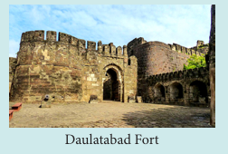
Picture, picture description begins daulatabad fort picture is given picture description ends.
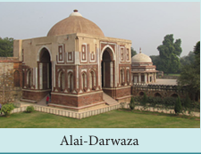
Picture, picture description begins alai-darwaza picture is given picture description ends.
Impending, about to happen, எக்கணமும் நடைபெற இருககிற/ அச்சுறுத்தும் நிலையில் இருக்கிற
Ferocious, cruel, violent, மூரக்கமான/ அச்சம் தருகிற வகையில்
Conspirator. someone who conspires secretly with other people to do something unlawful or harmful, சதிகாரர்கள்
Patron, supporter, promoter, புரவலர்
Plunder, to steal goods forcibly from a place especially during a war, கொள்ளையடி
Procurement, the process of getting supplies, கொள்முதல்
Disastrous, causing great damage, பேரழிவு
Fragment, break into pieces, துண்டு துண்டாக
Counterfeit, fake, போலியான
Waiving, exempting, விலக்கு அளி
QR CODE NUMBER IS GIVEN, QR code description begins NUMBER, H, R, U, O, P. QR code description begins
1, Choose the correct answer
1, DASH laid the foundation of ‘Mamluk’ dynasty.
a) Mohammad Ghori,
b) Jalal-ud-din,
c) Qutb-ud-din Aibak,
d) Iltutmish
2, Qutb-ud-in shifted his capital to Delhi from DASH
a) Lahore,
b) Poona,
c) Daulatabad,
d) Agra,
3, DASH completed the construction of the Qutb-Minar.
a) Razia,
b) Qutb-ud-din –Aibak,
c) Iltutmish,
d) Balban
4, DASH laid the foundation of the city Tughluqabad near Delhi.
a) Muhammad-bin –Tughluq,
b) Firoz shah Tughluq,
c) Jalal –ud-din,
d) Ghiyas –ud-din
2, Fill in the Blanks
1, DASH was the founder of Tughluq dynasty.
2, Muhammad–bin-Tughluq shifted his capital from Delhi to DASH
3, DASH patronized the famous Persian poet Amir Khusru.
4, Quwwat-ul-Islam Masjid in Delhi was built by DASH.
5, The threat of Mongols under Chengizkhan to India was during the reign of DASH
3, Match the following
1, Tughril Khan- Governor of Kara
2, Ala-ud-din - Jalal-ud-din Yakut
3, Bahlol Lodi - Governor of Bengal
4, Razia-- Governor of Sirhind
4, State true or false
1, Qutb-ud-din Aibak died of mysterious fever.
2, Razia was an able and brave fighter.
3, The Turkish nobles chose Iltutmish, son of Aibak, as Sultan after the death of Aibak.
4, FirozShah Tughluq refused to accept an invitation from a Bahmani Prince to intervene in the affairs of the Deccan
5, Match the statement with the reason. Tick the appropriate answer
1) Assertion (A): Balban maintained cordial relationship with Mongols
Reason (R): The Mongol ruler, a grandson of Chengiz Khan, assured that Mongols would not advance beyond Sutlej.
a) Reason is the correct explanation of Assertion.
b) Reason is not the correct explanation of Assertion.
c) Assertion and Reason are wrong.
d) Assertion is wrong and Reason is the correct.
2) Find out the correct pair
a) Hoysala - Devagiri
b) Yadavas - Dwarasamudra
c) Kakatias - Warrangal
d) Pallavas - Madurai
3) Find out the wrong statement
a) After Ghori’s death in 1206, his slave Qutb ud-din Aibak proclaimed himself the ruler of the Turkish territories in India.
b) Razia established the department of spies to gather intelligence about the conspirators and the trouble makers against her rule.
c) Balban built forts to guard his empire against the Mongol attack.
d) Ibrahim Lodi was defeated by Babur in 1526.
6, Answer the following in one or two sentences
1, Name the land granted to army officials in lieu of a regular wage.
2, Who founded the city of Agra?
3, Name the ruler who established Muslim rule in India in 12th century A.D (CE).
4, Write a note on chahalgani
5. How did Ala-ud-din Khalji consolidate the Delhi Sultanate?
6, List out the contributions of Firoz Shah Tughluq
7, Answer the following
1. Write about the invasion of Timur in 1398
8, HOTs
1, How would you evaluate Muhammad-bin Tughluq as Sultan of Delhi?
9, Map Work
On the river map of India draw the extent of Tughluq Dynasty and mark the following places.
1. Delhi, 2. Devagiri, 3. Lahore, 4. Madurai
10, Student Activity
1, Match the Father with Son
1, Qutb-ud-din Aibak - Rukn-ud-din-Firuz
2, Iltutmish - Kaiqubad
3, Balban - Ala-ud-din
4, Ghiyas-ud-din - Sikandar Lodi
5, Bahlol Lodi - Aram Shah
2. Prepare an album of pictures of Islamic art and architecture of the Delhi Sultanate
1, Abraham Eraly, The Age of Wrath, New Delhi:Penguin, 2014.
2, R.C Majumdar, H.C. Ray Chaudhuri and Kalikinkar Datta, An Advanced History of India, New Delhi:Trinity, 2018.
3, Burton Stein, A History of India, New Delhi: Oxford University Press, 2004 (Reprint).
4, S.K. Singh, History of Medieval India, New Delhi: Axis Books, 2013.
The Delhi Sultanate
PROCEDURE:
Step 1: Open the Browser and type the URL given below (or) Scan the QR Code
Step 2: Keep Scrolling and go to ‘Timeline’
Step 3. Click any period and you can explore the historical events with pictorial descriptions (ex. Delhi Sultanate)
The Delhi Sultanate URL: https://delhi-timeline.in/ (or) scan the QR Code
QR CODE IS GIVEN, QR code description begins NUMBER, Q, V, A,1, K QR Code description ends
QR Code is given, QR code description begins Number, K, G, W, O, X QR code description ends.
The earth, our homeland, is a dynamic planet. The earth’s surface has lofty mountains, high plateaus, large plains and deep valleys etcetera The earth’s surface is constantly undergoing changes inside and outside. Have you ever wondered what lies in the interior of the earth? What is the earth made up of? Let us learn about this in detail.
The structure of the earth may be compared to that of an apple. On the basis of the study of earthquake waves the spherical earth is found to be three concentric layers.
They are: 1. The crust, 2. The mantle, and, 3. The core
1. The Crust
The crust is the outermost layer of the earth. Its thickness varies from 5 to 30 km. It is about 35 km on the continental masses and only 5 km on the ocean floors. Despite greater thickness, the continental crust is less dense than the oceanic crust because it is made of both light and dense rock types. The oceanic crust is composed mostly of dense rocks such as basalt
The crust comprises two of distinct parts. The upper part consists of granite rocks and forms the continents. It has the main mineral constituents of silica and alumina. So it is referred to as Sial. It has an average density of 2.7g/cm3.
The lower part is a continuous zone of denser basaltic rocks forming the ocean floors, comprising mainly of silica and magnesium. It is therefore called Sima. It has an average density of 3.0g/cm3. The sial and the sima together form the earth’s crust. Since the sial is lighter than the sima, the continents can be said to be ‘floating’ on a sea of denser sima
DO YOU KNOW? ( Box Item)
Earth is called as blue Planet. 71% of the earth is covered by water
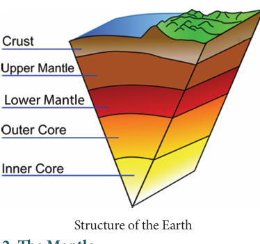
Picture, picture description begins figure shows the structure of the earth in this figure crust, upper mantle, lower mantle, outer core and inner core are shown. picture description ends.
2. The Mantle
The next layer beneath the crust is called the mantle. It is separated from the crust by a boundary called Mohorovicic discontinuity. The mantle is about 2,900 km thick. It is divided into two parts.
1, The upper mantle with a density of 3.4 to 4.4 gram per centimetre cube extends down to 700 kilometre
2, The lower mantle having a density of 4.4 to 5.5 gram per centimetre cube extends from 700 to 2,900 kilometre
Why the interior of the earth is so hot?
3. The Core
The innermost layer of the earth is called the core. It is also known as barysphere. It is separated from the mantle by a boundary called Weichart-Gutenberg discontinuity. The core is also divided into two parts.
1, The outer core, which is rich in iron, is in liquid state. It extends between 2,900 – 5,150 kilo meter
2, The inner core, composed of Nickel and Ferrous (Nife), is solid in state. The central core has very high temperature and pressure. It extends from 5,150 km to 6,370 km. The average density of core is 13.0 gram per centimetre cube
DO YOU KNOW? (Box Item)
The crust forms only 1 PERCENTAGE of the volume of the earth, 84 PERCENTAGE consists of the mantle and 15 PERCENTAGE makes the core. The radius of the earth is 6,371 kilometre
The Earth Movements
The lithosphere is broken into a number of plates known as the Lithospheric plates. Each plate, oceanic or continental moves independently over the asthenosphere. The movement of the Earth’s lithospheric plates is termed as tectonic movements. The energy required to move these plates is produced by the internal heat of the earth. These plates move in different directions at different speed.
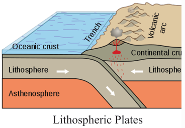
Picture, picture description begins figure showing lithospheric plates. it shows lithosphere, asthenosphere, ocenic crust, trech, volcanic arc and continental crust . picture description ends.
At places, these plates move away from each other creating wide rifts on the earth’s surface. At some places, these plates come closer and collide. When an oceanic plate collides with a continental plate, the denser oceanic plate is forced below the continental plate. As a result of the pressure from above the rocks heats up and melts. The molten rocks rise again forming volcanic mountains along the continental edge. Alternatively, a trench may be formed between two plates
In some cases, when two continental plates converge, neither plate can be forced under the other. Instead, folds may be created. Great mountain ranges like the Himalayas have been formed in this way.
The movement of these plates causes changes on the surface of the earth. The earth movements are divided on the basis of the forces which cause them. The forces which act in the interior of the earth are called as Endogenic forces and the forces that work on the surface of the earth are called as Exogenic forces.
Endogenic forces produce sudden movements and Exogenic forces produce slow movements. Endogenic movements produce earthquakes and volcanoes that cause mass destruction over the surface of the earth
DO YOU KNOW? (Box Item)
The asthenosphere is the part of the mantle that flows and moves the plates of the earth
A sudden movement of a portion of the earth’s crust which produces a shaking or trembling is known as an earthquake. The point where these vibrations originate is called the focus of the earthquake. The point of the earth’s surface directly above the focus is called the epicentre of the earthquake. From the focus, the earthquake vibrations travel in different directions in the form of seismic waves.
The earthquake waves are recorded by an instrument known as seismograph. The magnitude of an earthquake is measured by the Richter scale. The numbers on this scale range from 0 to 9
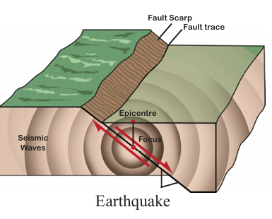
Picture, picture description begins the figure shows the occruence of earth quake. This figure showing seismic wave, focus, fault scarp, fault trace and epi centre. picture description ends.
Causes of Earthquake
The chief cause of earthquake is the sudden slipping of the portion of the earth’s crust along fractures or faults. The movement of the molten rocks underneath the surface produce strains which break the rocks apart. The sudden shifting of landmass causes upheavals in the crust of the earth sending vibrations or waves into the surrounding portions of the earth. Sometimes the surface of the earth itself cracks.
Effects of Earthquakes
Earthquakes may cause changes in the earth’s surface. Vibrations often set landslides in mountainous regions. A greater danger in an earthquake is the falling of buildings. Most of the houses which collapsed were made of mud and bricks and proved to be death traps. Underground water system is naturally disturbed by such movements. Fire is another great danger
There are three types of earthquake waves:
P, waves or longitudinal waves
S, waves or transverse waves
L, waves or surface waves
An earthquake which originates below or near the sea causes great disturbance in the water. The floods and waves cause great loss of life, sometimes more than the earthquake itself. Tsunami, a Japanese term, is the name given to the huge waves caused in the sea by an earthquake. Tsunamis are quite common along the coasts of Japan and other regions in the Pacific Ocean
DO YOU KNOW? (Box Item)
On 26th December 2004, Tsunami in the Indian Ocean swept coastal area of Indonesia, India, Srilanka, Thailand etcetera, They caused immense damage to life and property in the coastal area
Distribution of Earthquakes
The world’s distribution of earthquakes coincides very closely with that of volcanoes. Regions of greatest seismicity are circum-Pacific areas, with the epicenters and the most frequent occurrences along the Pacific Ring of Fire. It is said that about 68 % of earthquakes occur in this belt. Remaining 31 % of earthquakes take place in the Mediterranean-Himalayan belt including Asia Minor, the Himalayas and parts of north-west China. The remaining percent of earthquakes occur in Northen Africa and Rift valley areas of the Red sea and Dead sea
In India, the Himalayan region and the Ganga-Brahamaputra valley are prone to earthquakes. A number of earthquakes have been experienced in this region. Some of them were very severe and caused extensive damage, example, , the earthquake of Uttar Kashi in 1991 and Chamoli in 1999. The Deccan Plateau, which was supposed to be comparatively free from the dangers of the earthquakes, has experienced two severe earthquakes in the past, the Koyna (Maharashtra) earthquake in 1967 and the Latur earthquake in 1993.
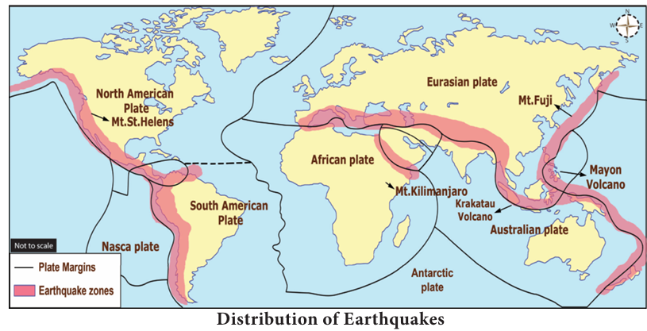
Volcanoes
A volcano is a vent or an opening in the earth’s crust through which hot magma erupts from deep below the surface. The opening is usually circular in form. Volcanic eruptions may also take place through a long crack or fissure through which steam and other materials flow out.
The molten rock material within the earth, together with gases, is called magma. After it rises to the surface, it is called as lava.
In course of time, lava and other materials f low out of a volcano accumulate around the opening and form a conical hill or a mountain vent is an openning or mouth of a volcano. The top of this cone is usually marked by a funnel shaped depression, which is called a crater. If the crater of a volcano is of great size and is shaped like a basin, it is called a caldera. Calderas are caused by violent explosions which blow away entire tops of great cones
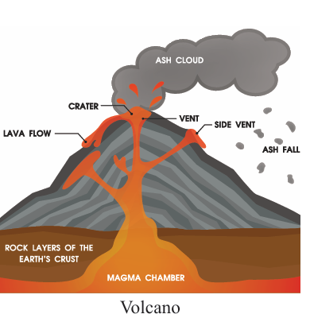
Picture, picture description begins The Volcano Picture is given. In this picture, Magma chamber, Rock layers of the earth’s crust, crater, vent, Lava flow, vent, side vent, ash cloud, ash fall are given. picture description ends.
Causes of Volcanic Activity
The temperature increases as the depth increases at the rate of 1ºc for every 32 metres. There is also great pressure. At a depth of about 15 km the pressure is about 5 tonnes per cm2of rock. Under these circumstances, the interior of the earth is in a semi-molten state called magma. The magma, under great pressure has the capacity to dissolve great volume of gas; some gases are also combustible. This makes volcanic material burst forth through the weak spots in the earth’s crust
Box Item
The scientific study of valcanoes is called volcanology. People who study valcanoes are called volcanologists
Nature of volcanic eruptions
Sometimes, magma rises slowly to the surface and spreads over a vast area. This is known as fissure eruption. Some plateaus and plains have been formed in this way, example, Deccan Plateau in India and the Colombian Plateau in North America. If the magma rises quickly to the surface, lava is thrown high into the atmosphere. Besides lava, ash, steam, gases and pieces of rocks are also thrown out. This type of eruption is known as explosive eruption. The terrible explosion on 27th August 1883 in the island of Krakatoa, Indonesia is an example for explosive type of eruption.
The viscosity of lava is determined by the amount of silica and water in magma. Highly viscosity lava is rich in silica and has little water. Low viscosity lava has little silica, but a lot of water. It moves rapidly forming smooth flows.
DO YOU KNOW? (Box Item)
Barren island is situated in the Andaman Sea, and lies about 138 km northeast of the territory's capital. It is only in active volcano along the chain from sumatra to myanmar. Last eruption occurred in 2017
Types of Volcanoes
Volcanoes are classified according to their periodicity of eruptions and the state of activity such as
1, Active Valcano
2, Dormant Valcano
3, Extinct Valcano
1, Active Valcano
Valcanoes that erupt frequently are called active volcanoes. Most of the active volcanoes lie in the Pacific Ring of Fire belt which lies along the Pacific coast. There are about 600 active volcanoes in the world, such as Mt. Stromboli in Mediterranean Sea, St.Helens in USA, Pinatubo in Philippines. Mauna Loa in Hawaii is the world’s biggest active volcano
DO YOU KNOW? (Box Item)
Stramboli is known as the ‘light house of Mediterranean Sea’
2. Dormant Valcano
These volcanoes have shown no sign of activity for many years but they may become active at any time. These are called Sleeping Volcanoes. Vesuvius mountain of Italy, Mt Fujiyama of Japan, Mt. Krakatoa of Indonesia are famous examples of this types.
3. Extinct volcano
A Volcano has not erupted in past 1000 years is often listed as Extinct volcanoes. The top of extinct volcanic mountains has been eroded. Mt Popa of Myanmar and Mt. Kilimanjaro and Mt. Kenya of Africa are examples of extinct volcanoes
Distribution of Volcanoes in the world
Volcanoes are located in a clearly-defined pattern around the world. They are closely related to regions that have been intensely folded or faulted. There are about 600 active volcanoes and thousands of dormant and extinct ones. They occur along the coastal mountain ranges, as off-shore islands and in the midst of oceans, but there are a few in the interior of continents. The volcanic belts are also the principal earthquake belts of the world. There are three major zones of volcanic activities in the world.
They are:
1, The Circum – Pacific belt
2, The Mid continental belt
3, The Mid Atlantic belt
1, Circum Pacific Belt
This is the volcanic zone of the convergent oceanic plate boundary. It includes the volcanoes of the eastern and western coastal areas of Pacific Ocean. This zone is popularly termed as the Pacific Ring of Fire which has been estimated to include two-thirds of the world’s volcanoes.
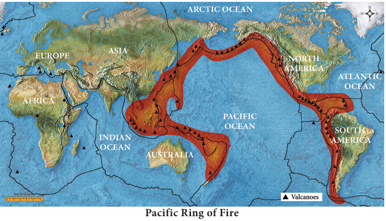
Picture, picture description begins The world Map is given. In this the Pacific Ring of Fire is indicated in red color. Valcanoes indicated as triangles. The names of continent and oceans like, Asia, Europe, Africa, North America, South America, Indian ocean, Pacific Ocean, Arctic Ocean, Atlantic Ocean are given. picture description ends.
2, Mid continental belt
This is the volcanic zone of convergent continental plate boundaries that includes the volcanoes of Alpine Mountain chains, the Mediterranean Sea and the fault zone of eastern Africa. The important volcanoes are Vesuvius, Stromboli, Etna, Kilimanjaro and Kenya. Surprisingly, the Himalayas have no active volcanoes at all
3, Mid Atlantic Belt
This belt represents the divergent boundary of plates located along the mid-Atlantic ridges. Volcanoes of this area are mainly of fissure eruption type. Iceland is the most active volcanic area and is located on the mid-Atlantic ridge. St. Helena and Azores Island are other examples.
QR CODE IS GIVEN, QR code description begins NUMBER, S, N, Z, 7, 0. V. QR. Code description begins
1, Choose the correct answer
1, Nife is made up of DASH
a) Nickel and ferrous,
b) Silica and aluminium,
c) Silica and magnesium,
d) Iron and magnesium
2, Earthquake and volcanic eruption occur near the edges of DASH
a) Mountain
b) Plains
c) Plates
d) Plateaus
3, The magnitude of an earthquake is measured by DASH
a) Seismograph
b) Richter scale
c) Ammeter
d) Rotameter
4, The narrow pipe through which magma flow out is called a DASH
a) Vent
b) Crater
c) Focus
d) Caldera
5, DASH Volcano is known as light house of Mediterranean Sea.
a) Stromboli,
b) Krakota,
c) Fujiyama,
d) Kilimanjaro
6, DASH belt is known as the “Ring of Fire”.
a) Circum – Pacific,
b) Mid-Atlantic,
c) Mid – Continental,
d) Antarctic
2, Fill in the blanks
1, The core is separated from the mantle by a boundary called DASH
2, The earthquake waves are recorded by an instrument known as DASH
3, Magma rises to the surface and spreads over a vast area is known as DASH
4, An example for active volcano is DASH
5, Seismology is the study of DASH
3, Circle the odd one
1, crust, magma, core, mantle
2, focus, epicenter, vent, seismic waves
3, Uttar Kashi, Chamoli, Koyna, Krakatoa
4, lava, caldera, silica, crater
5, Stromboli, Helens, Hawaii, Fujiyama
4, Match the following
1, Earth quake- Japanese term
2, Sima - -Africa
3, Pacific Ring of Fire- Sudden movement
4, Tsunami - Silica and magnesium
5, Mt. Kenya - World volcanoes
5, Consider the following statement and ( Tick the appropriate answer)
1, Assertion (A): There structure of the earth may be compared to that of an Apple.
Reason (R): The interior of the earth consists of crust, mantle and core.
a) Assertion and Reason are correct and Reason explains Assertion
b) Assertion and Reason are correct but Reason does not explain Assertion
c) Assertion is incorrect but Reason is correct
d) Both Assertion and Reason are incorrect
2, Assertion (A): The Pacific Ocean includes two thirds of the world’s volcanoes.
Reason (R): The boundary along the Eastern and Western coast areas of the Pacific Ocean is
known as the Pacific Ring of Fire.
a) Assertion and Reason are correct and Reason explains Assertion
b) Assertion and Reason are correct but Reason does not explain Assertion
c) Assertion is incorrect but Reason is correct
d) Both Assertion and Reason are incorrect
6, Answer in a word
1, Name the outer most layer of the earth.
2, What is S, I, A, L?
3, Name the movement of the Earth’s lithospheric plates?
4, Give an example of extinct volcano
7, Answer the following briefly
1, What is mantle?
2, Write note on the core of the earth?
3, Define Earthquake.
4, What is Seismograph?
5, What is a volcano?
6, Name the three types of volcanoes based on periodicity of eruption.
8, Give reason
1, No one has been able to take samples from the interior of the earth
2, The Continental crust is less dense than the oceanic crust
9, Distinguish between
1, S I A L and S I M A
2, Active volcano and dormant volcano
10, Answer the following in detail
1, Write about the effects of an earthquake?
2, Describe the classification of volcanoes based on the eruptions.
3, Name the major zones of volcanic activity and explain any one.
11, HOTs
1, The earth’s interior is very hot. Why?
2, Are Volcones Destructive (or) Constructive?
3, How does volcaone make an Island
12, Activity
1, Prepare an album on earthquake and volcanoes.
2, Label the parts of volcano
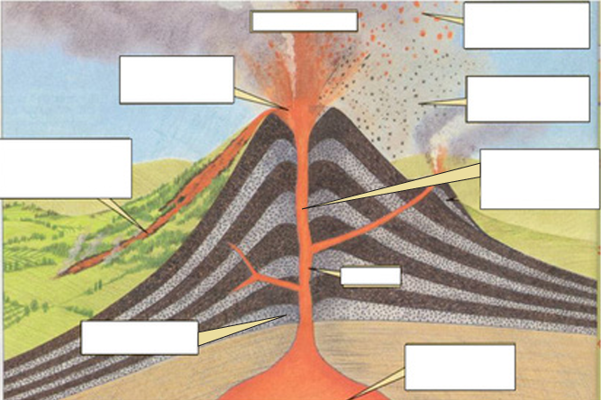
Picture, picture description begins a picture of volcano is given picture description ends.
3, On an outline map of the world, mark the Pacific Ring of Fire
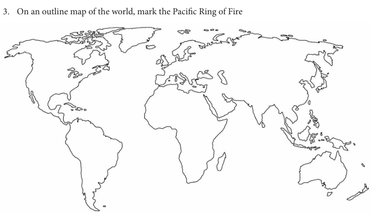
Picture, picture description begins an outline map of the world is given. picture description ends.
1, Majid Husain, Physical Geography, Anmol Publication Pvt Ltd
2, A Das Gupta, A.N. Kapoor, Principles of Physical Geography, S. Chand & Company Ltd., New Delhi
3, Goh Cheng Leong, certificate Physical and Human Geography, Oxford University press.
4, Savindra Singh (2015) physical Geography, Pravalika publications Allahabad
select full screen mode and play the game with descriptions
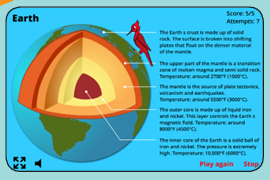
Picture, picture description begins interior of the earth given. picture description ends
PROCEDURE
Step 1: Open the Browser and type the URL given below (or) Scan the QR Code
Step 2: Click on the Map to start
Step 3: select full screen mode and play the game with descriptions
Interior of the Earth URL: http://world-geography-games.com/earth/index.htm
QR CODE IS GIVEN, QR code description begins NUMBER, 4, Z, I, U,8. QR Code description ends.
QR Code is Given, QR code description begins Number, 0, E, J, C, H. QR Code description ends.
In the earlier class, we have learnt that the surface of the earth is not the same everywhere. The earth has an infinite variety of landforms named mountains, plateaus, plains, valley etcetera, Some parts of the lithosphere may be rugged and some flat. These landforms are a result of two processes. They are
1, The Endogenic Process
2, The Exogenic Process
1) The Endogenic Process
The endogenic process (internal process) leads to the upliftment and sinking of the earth’s surface at several places.
2) The Exogenic Process
The exogenic process (external process) is the continuous wearing down and rebuilding of the land surface.
Gradation is the process of levelling of highlands through erosion and filling up of lowlands through deposition.
The landscape is being continuously worn down by two processes – weathering and erosion. Weathering is the breaking and falling apart into small pieces of the rocks on the earth’s surface. Erosion is the wearing down of the landscape by different agents like water, wind, ice and sea waves. The eroded material is carried away by water, wind, etcetera and eventually deposited. This process of erosion and deposition create different landforms on the surface of the earth.
River
The water flowing from its source to river mouth, along a definite course is called a River. Rivers generally originate from a mountain or hill. The place of origin of the river is known as its Source. The place where it joins a lake or sea or an ocean is known as River mouth
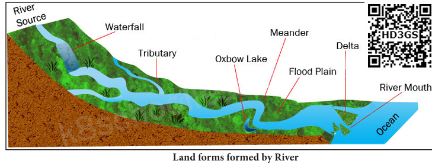
Picture, picture description begins Landforms formed by river Picture is give. In this picture, River Source, Waterfall, Tributary, Oxbow Lake, Meander, Flood Plain, Delta, River mouth and Ocean are indicated. picture description ends.
QR CODE IS GIVEN, QR Code description begins NUMBER, H, D,3, G, S. QR Code description ends.
The running water in the river erodes the mountainous track, which creates a steep-sided valley like the letter ‘V’ known as ‘V’ shaped valley.
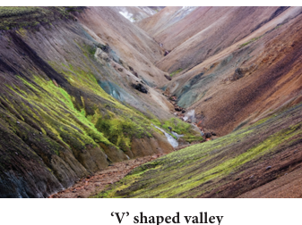
Picture, picture description begins the figure shows the V shaped valley. picture description ends.
Falling of river water over a vertical step in the river bed is called waterfall. It is formed when the soft rocks are removed by erosion. EXAMPLE, Coutrallam falls across the river Chittar in Tamil Nadu
Plunge pool is a hollow feature at the base of a waterfall which is formed by cavitation. Alluvial fan is a deposition of sediment occurs at which the river enters a plain or the foot-hills
DO YOU KNOW? (Box Item)
The world’s highest waterfall is Angel Falls of Venezuela in South America. The other waterfalls are Niagara Falls located on the border between Canada and USA in North America and Victoria Falls on the borders of Zambia and Zimbabwe in Africa.
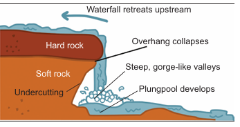
Picture, picture description begins A waterfall picture is given. In this picture, Hard rock, Soft rock, Undercutting, water retreats upstream, Overhang collapses, Steep, gorge, like valleys, Plung pool develops are indicated. picture description ends
Picture, picture description begins the figure showing meanders picture description ends.
As the river enters the plain it twists and turns forming large bends known as Meanders. Example, Meanders along the River Vellar near Sethiyathope in Cuddalore District, Tamil Nadu. Due to continuous erosion and deposition along the sides of the meander, the ends of the meander loops come closer. In due course of time the meander loop cuts off from the river and forms a cut-off lake, also called an Ox-bow lake
Formation of ox-bow lake
Erosion makes neck narrow
During flood rivers makes its course straight
New Straight river course
Cut off / Abandoned meander or Ox-bow lake
Picture, picture description begins the picture showing the formation of ox-bow lake picture description ends.
DO YOU KNOW? (Box Item)
The term ‘Meander’ has been named on the basis of Meander River of Asia Minor (Turkey), which flows through numerous curves and turns
At times the river overflows its banks. This leads to the flooding of the neighbouring areas. As the river floods, it deposits layers of fine soil and other material called sediments along its banks. This leads to the formation of a flat fertile floodplain. The raised banks are called levees.
As the river approaches the sea, the speed of the flowing water decreases and the river begins to break up into a number of streams called distributaries. The velocity of the river becomes so slow that it begins to deposit its load. The collection of sediments from all the mouths form Delta. Deltas are excellent productive lands. EXAMPLE, Cauvery delta, Ganges delta, Mississippi delta.
Picture, picture description begins A delta Picture is given. In this picture, Direction of flow, Meander, Sediment deposit, lake, Distributaries and sea are indicated. picture description ends.
Find out the names of a few rivers of the world that form a delta with the help of the Atlas.
Glacier
A large body of ice moving slowly down a slope or valley due to gravity is called a glacier. Glaciers are grouped into Mountain or Valley Glaciers and Continental Glaciers.
Continental Glacier: The glacier covering vast areas of a continent with thick ice sheets. EXAMPLE, Antarctica, Greenland
Mountain or Valley Glacier is a stream of ice, flowing along a valley. It usually follows former river courses and are bounded by steep sides, EXAMPLE. The Himalayas and the Alps.
Glaciers, expose the solid rocks of earth by removing the loose materials found on it.
Picture, picture description begins Formation of a Cirque picture is given. Zone of plucking, Tarn (Lake), Zone of abrasion, Headwall, Randkluft, Bergschrund, Headwall gap, Glacial Ice, Terminal Moraine are pointed out in this picture. picture description ends.
Cirque is a glacially eroded rock basin, with a steep side wall and steep head wall, surrounding an armchair-shaped depression. Example, Corrie – Scotland (United Kingdom), Kar – Germany.
As the ice melts, they get filled up the cirque with water and become beautiful lakes in the mountains called as Tarn Lake. When two adjacent cirques erode towards each other, the previously rounded landscape is transformed into a narrow rocky, steep – sided ridges called Arete.
Picture, picture description begins the clip showing a arete picture description ends.
U’ Shaped Valley is found beneath the glaciers which is deepened and widened by the lateral and vertical erosion. The material carried by the glacier such as rocks - big and small, sand and silt get deposited. These deposits form glacial moraines
Picture, picture description begins the clip showing a morine picture description ends.
Wind
Have you ever visited a desert? Try to collect some pictures of sand dunes. An active agent of erosion and deposition in the deserts is wind.
Winds erode the lower section of the rock more than the upper part. Therefore, such rocks have narrower base and wider top. Wider top rocks in the shape of a mushroom, commonly called mushroom rocks. An isolated residual hill, standing like a pillar with rounded tops are called Inselbergs. Example, Inselberg in the Kalahari Desert of South Africa.
Picture, picture description begins a clip of a mushroom rock is given picture description ends.
Picture, picture description begins a clip of a inselberg is given. picture description ends
When the wind blows, it lifts and transports sand from one place to another. When it stops blowing the sand falls and gets deposited in low hill – like structures. These are called sand dunes. The crescent shaped sand dunes are called Barchans.
Picture, picture description begins a clip of barchans is shown. picture description ends
When the grains of sand are very fine and light, the wind can carry it over very long distances. When such sand is deposited in large areas, it is called Loess. Large deposits of loess are found in China.
Picture, picture description begins a clip of loss is shown picture description ends
DO YOU KNOW? (Box Item)
Northern China loess deposits are brought from the Gobi Desert
Sea waves
A part of the land adjoining or near the sea is called the Sea coast. The boundary of a coast, where land meets water is called the Coast line. The coastal areas are subject to change due to wave erosion and wave deposition.
Picture, picture description begins Coastal Landform Picture is given. In this Picture, Coastal Lagoon, Coastal Dunes, Bay, Headland, Cliff, Sea Arch, Beach, Sea Stack, Sea Stump, River, Delta, Sand spit, Ocean are pointed out. picture description ends.
The erosion and deposition of the sea waves give rise to coastal landforms. Sea Cliffs are steep rock faces formed, when the sea waves dash against them. Sea waves continuously strike at the rocks. So Cracks develop. Over time they become larger and wider. Thus, hollow like caves are formed on the rocks. They are called Sea Caves
Picture, picture description begins the clip is showing a sea cliff. picture description ends
Picture, picture description begins the picture is showing a sea cave. picture description ends.
As the cavities of sea caves become bigger and bigger only the roof of the caves remains, thus forming Sea Arches. Further, erosion breaks the roof and only walls are left. These wall like features are called Sea Stacks.
Picture, picture description begins the picture is showing a sea arch and sea stack picture description ends.
The sea waves deposit sediments of sand and gravel along the shores forming Beaches. Sand bar is an elongated deposition of sand or mud found in the sea, almost parallel to the coast
Picture, picture description begins the clip is showing beach and sand bar picture description ends
Lagoon is a shallow stretch of water partially or completely separated from the sea. Example, Chilika lake in Odisha, Pulicat lake in Tamil Nadu and Vembanad lake in Kerala are the famous lagoons in India
Picture, picture description begins the picture shows lagoon. picture description ends
DO YOU KNOW? (Box Item)
The longest beach in the world is the Miami beach in South Florida in U.S.A. The second longest beach in the world is the Marina beach in Chennai
QR CODE IS GIVEN, QR code description begins NUMBER, E, L, O, M, X. QR code description ends
1, Choose the correct answer
1, DASH is a deposition of river sediments along the foot-hills.
a) Plunge pool,
b) Alluvial fan,
c) Flood plain,
d) Delta
2, Courtallam falls is located across the DASH river.
a) Cauvery
b) Pennar
c) Chittar
d) Vaigai
3, The landform created by glacial deposition is
a) Cirque,
b) Arete,
c) Moraine,
d) Tarn lake
4, Large deposits of loess are found in
a) USA,
b) India,
c) China,
d) Brazil
5, Land forms which are not associate with wave erosion DASH
a) Cliffs
b) Sea archs
c) Stacks
d) Beaches
2, Fill in the blanks
1, The process of breaking and crumbling of rocks is DASH
2, The place where the river joins a lake or a sea is known as DASH
3, Inselbergs are found in the DASH desert in South Africa.
4, A cirque is known as DASH in Germany.
5, The longest beach in the world is DASH
3, Match the following
1, Breaking and crumbling of rocks - Glacier
2, Abandoned meander loops - Barchans
3, Large body of moving ice - Lagoon
4, Crescent shaped sand dunes - Weathering
5, Vembanad lake - Oxbow lake
4, Consider the following statement and tick the appropriate answer
1, Assertion (A): The deltas are formed near the mouth of the river.
Reason (R) : The velocity of the river becomes slow when it approaches the sea.
a) Both Assertion and Reason are correct
b) Assertion is correct and Reason is wrong
c) Assertion is wrong and Reason is correct
d) Both Assertion and Reason are wrong
2, Assertion (A): Sea arches in turn become Sea Stacks.
Reason (R) : Sea Stacks are the results of wave deposition.
a) Both Assertion and Reason are correct
b) Assertion is correct and Reason is wrong
c) Assertion is wrong and Reason is correct
d) Both Assertion and Reason are wrong
5, Answer the following
1, Define erosion.
2, What is a plunge pool?
3, How are Ox – bow lakes formed?
4, Name the major landforms formed by glacial erosion.
5, Give a note on Mushroom rocks.
6. What is a lagoon? Give an example
6, Distinguish the following
1, Tributary and Distributary
2, ‘V’ shaped valley and ‘U’ shaped valley
3, Continental glacier and Mountain glacier
7, Give Reason
1, The ends of the meander loops come closer and closer.
2, Flood plains are very fertile.
3, Sea caves are turn into stacks
8, Answer in a paragraph
1, Explain different landforms produced by river erosion.
2, Describe the landforms associated with wind
3, How are aretes formed?
Activity
1, Fill in the corresponding columns with reference to the landform features given below
[Barchan, ‘V’ Shaped valley, Cliff, Arete, Inselberg, Moraine, Alluvial fan, Lagoon]
Table description begins
Serial Number |
Natural Agents |
landforms |
|
Erosion |
Deposition |
||
1 |
River |
|
|
2 |
Glacier |
|
|
3 |
Wind |
|
|
4 |
Sea wave |
|
|
Table description ends
2, Identify any one of the following features near your home town and write a note on them.
1, Hill, 2, Waterfall, 3, River (or) stream, 4, Beach.
1, Savindra Singh (2015), Physical Geography, Pravalika Publications,Allahabad.
2, Rajeev Gupta (2012), Physical Geography, Sonali Publications, New Delhi.
3, A. Das Gupta, A.N. Kapoor, Physical Geography, S. Chand and Company Ltd, New Delhi.
4, Nater Singh Raina (2012), Contemporary Physical Geography, Concept Publishing Company
Pvt. Ltd, New Delhi.
Landforms
Through this activity you will know about different types of land in the world
PROCEDURE:
Step – 1 Open the Browser and type the URL given below (or) Scan the QR Code.
Step - 2 Go to menu and select any types of land (Ex. Glacier)
Step - 3 Roll over the red dot on the map to the right to choose a glacier
Landforms URL: http://www.harcourtschool.com/activity/types_of_land_2/index.html
QR CODE IS GIVEN, QR code description begins NUMBER, T,2, Y, I, N. QR Code description ends
QR CODE IS GIVEN, QR code description begins NUMBER, S,3,0, B, R. QR Code description ends.
Population Geography is a study of demographic phenomena which includes natality, morality, growth rates etcetera, through both space and time. Increase or decrease in population indicates population distribution and growth. The study of movements and mobility of population is called migration.
Race has been defined as a biological grouping within the human species. The race is a group of people with more or less permanent distinguishing characteristics that are inherited. T he most widely found human racial types are based on visual traits such as head shape, facial features nose shape, eye shape and colour, skin colour, stature, blood groups etcetera,
The major world human races are
• Caucasoid
• Negroid
• Mongoloid
• Australoid
QR CODE IS GIVEN, QR code description begins NUMBER, N, F, T, X, Q. QR Code description ends.
Caucasoid
The Caucasoid is known as European race. This group is the one with fair skin and dark brown eyes, wavy hair and narrow nose. The Caucasoid are also found in Eurasia
Picture, picture description begins the picture showing major world human races. picture description ends.
DO YOU KNOW? (Box Item)
Human geography is the study of Man and his surroundings to the natural environment
Negroid
Negroid have the dark eyes, black skin, black wooly hair, wide nose, long head, and thick lips. They are living in different parts of Africa.
Mongoloids
The mongoloid race is commonly known as the Asian-American race. The mongoloid have the light yellow to brown skin, straight hair, flat face, broad head and medium nose. Such people are found in Asia and Arctic region
Australoids
Australoids have wide nose, curly hair dark skin, and short in height. They are living in Australia and Asia.
India is said to be one of the cradle lands of human civilization. The ancient Indus valley civilization in India is believed to have been of Dravidian origin in northern India. The Dravidian people were pushed south when the Indo-Aryan came in later. South India was dominated by the three Dravidian kingdoms of the Chera, the Cholas, and the Pandyas. The Dravidian languages are Tamil, Telugu, kannada, Malayalam and Tulu almost all the Dravidians live in southern part of India
Religion
Religion means a particular system of faith and worship, which brings human being with human society. Religion, is a symbol of group identity and a cultural rallying point
Classification of Religion
a) Universalizing Religions, Christianity, Islam and Buddhism.
b) Ethnic Religions, Judaism, Hinduism and Shintoism.
c) Tribal or Traditional Religions, Animism, Shamanism and Shaman
Language is a great force of socialization. Language, either in the written or oral form, is the most common type of communication. Language promotes the transmission of ideas and the functioning of political, economic, social and religious systems.
Major Languages in the world
Tamil, Hindi, Chinese, English, Spanish, Portuguese, Russian, Arabic, German
Languages of India
India has many languages and culture. Each state has its own language. 22 major languages were recognised by Indian Constitution. Kashmiri, Urdu, Punjabi, Hindi, Rajasthani, Gujarati, Bengali and Assamese are spoken in North India.
The main languages of the Dravidian family are Tamil, Telugu, Kannada, Malayalam etcetera, These languages are mainly spoken in southern India.
Table is given table description begins
Date |
Event |
Date, 11 July |
|
Date, 21 February |
|
Date, Third Sunday in January every year |
|
Date, 21 May |
|
Table description ends
Today usage of language has changed. It is often used as communicational skill. With the different means of communication and fast moving world advancement in technology helps in understanding the different languages very easily. These technologies have really brought the world closer
Settlement is a place where people live and interact through activities such as agriculture, trading and entertainment. A rural settlement is a community, involved predominantly in primary activities such as agriculture, lumbering, fishing and mining. An urban settlement engages in predominantly in secondary and tertiary activities, such as industries, trade and banking. A rural settlement tends to have a small population and low population density. Urban settlement often has a large population size and high population density.
Site and situation refers to the location of the actual settlement. The initial choice of a site for a settlement depends on how it is useful for meeting our daily needs, like water supply, availability of farmland, building material and fuel etcetera
Old House Types
In the early periods of human settlement, houses were built using local materials. The form of the house was closely related to the environment. In the agricultural regions, houses were built with mud walls and the roof was made of stalks of paddy (or) other crops of grass (or) thatch. Local wood was used to provide frame for the roof. Such old houses had wide verandahs and an open air circulation. The size of the house depended on the economic status of its inhabitants.
Picture, picture description begins the picture showing old house types. picture description ends.
Patterns of Settlements
Settlements are classified into Compact settlements and Dispersed Settlement Compact settlements
Compact settlement is also known as nucleated settlement. In this type large number of houses are very close to each other such settlement develop along the river valleys and fertile plains. In India compact settlements are found in the northern plains and the coastal plains of peninsular India.
Picture, picture description begins the picture showing compact settlements picture description ends.
Dispersed Settlements
Dispersed settlements are generally found in the areas of extreme climate, hilly tracts, thick forests, grasslands, areas of extensive cultivation. In these settlements, houses are spaced far apart and after interspersed with fields. In India this type of human settlement is found in the northern kosi tract, the Ganga delta, the Thar Desert of Rajasthan and the foot hills of Himalayas and the Niligris.
Picture, picture description begins the picture showing dispersed settlements picture description ends.
A hierarchy of settlements
Picture, picture description begins flow chart depicting hierarchy of settlements, settlements classified as rural and urban, rural settlements are classified as isolated, hamlet, village and small market. Urban settlements are classified as town, city and conurbation. picture description ends.
Settlements
1, Rural
Isolated
Hamlet
Village
Small market
2, Urban
Town
City
Conurbation
Rural settlement
Rural settlements are predominantly located near water bodies such as rivers, lakes, and springs where water can be easily available. People choose to settle near fertile lands suitable for agriculture, along with the provision of other basic needs. Hence, they prefer to live near low lying river valleys and coastal plains suited for cultivation. The availability of building materials like wood, stone and clay near settlements is another advantage, for settlements to be built.
Picture, picture description begins the picture showing rural settlement. picture description ends.
Factors Influencing Rural Settlement
• Nature of topography
• Local weather Condition
• Soil and water resources
• Social organisation
• Economic condition
Pattern of Rural Settlement
The pattern of settlement has been defined as the relationship between a house or building to another. A rural settlement pattern is a function of relief, climate, water supply and socio-economic factor. It is broadly classified under the following patterns, such as Linear, Rectangular, Circular, Star like pattern etcetera.
In a Linear settlement, houses are arranged along the either side of a roadways, railways line, river (or) canal, the edge of a valley, etcetera. Example, settlements found in the Himalayas, the Alps, the Rockies.
Picture, picture description begins the clip showing linear settlement picture description ends.
The rectangular settlements are almost straight, meeting each other at right angles. Such a settlement is found in plain areas (or) inter montane plain. Example, , settlements found in Sutlej. Houses built around a central area are known as Circular pattern of settlements. Such settlement develops around lakes and tanks. The Star like pattern of settlement develops on the sites and places where several roads converge and houses spread out along the sides of roads in all directions. Example, The Namakkal urban settlements
Picture, picture description begins the picture showing star like pattern. picture description ends.
Picture, picture description begins the picture showing circular pattern. picture description ends.
DO YOU KNOW? (Box Item)
Pilgrim settlement may come up around a place of worship(or) any spot with a religious significance. Example, settlements in Palani Hills, Tamil Nadu
Wet Point Settlement
A wet point settlement is located near water sources in arid regions
Picture, picture description begins the picture showing wet point settlement. picture description ends.
Dry Point Settlement
A dry Point settlement is located in low lying areas in the regions of excessive dampness. Dry point settlements are not affected by flood or any other source of water. Such settlements are found in the coastal plains of Kerala and deltas along the east coast of India.
Urban Settlements
The settlements in which most of the people one engaged in secondary and tertiary activities are known as urban settlements. Town, cities, and the areas of large cities are referred to as urban areas
Classification of Urban Settlements
The definition of urban area varies from one country to another. Some of the common basis of classification are
• Size of population
• Occupational structure
• Administration
QR CODE IS GIVEN, QR Code description begins NUMBER, T, Q,1, L,2. QR code description ends.
Town
Town is a general name for an urban place, usually a settlement meeting a prescribed minimum population threshold. The settlement with a population more than 5000 people is called a town. Basis on the function cities can be classified into towns, such as administrative, cantonment, academic etcetera.
City
The term City is generally applied to large urban places with a central business district. In India an urban place with more than one lakh population is considered as a city.
Mega city
A mega city is a very large city typically with a population of more than 10 million people.
A mega city can be a single metropolitan area. Example, Canton, Tokyo, Delhi, Mumbai are some of the examples of megacities.
Box Item
World Health Organization (WHO) suggests that among other things a healthy city must have • A Clean” and “Safe” environment • Meets the basic needs of “All” its inhabitants • Involves the “Community” in local government • Provides easily accessible “Health service
Megalopolis
The word megalopolis is given to a large settlement which is formed by the combination of two or more large cities whose total population exceeds ten million. The region made up of cities between Boston and Washington D.C is a well-known megalopolis. In India, Kolkata is the largest urban area which is a megalopolis. Gandhinagar, Surat, Vadodara, Rajkot in Gujarat are the important megalopolis cities in India.
Conurbation
A Conurbation is a region comprising of a number of cities, large town, and other urban areas that through population growth and physical expansion have merged to form one continuous urban (or) industrially developed area. Mumbai in Maharashtra, Gurgaon, Faridabad in Haryana, Noida in Uttar Pradesh are the conurbation cities of India.
Satellite Town
A satellite town is a town designed to house the over population of a major city, but is located well beyond the limits of that city. Satellite towns are generally located outside the rural urban fringe. In India most satellite towns are purely residential in character.
Picture, picture description begins the clip showing satellite town. picture description ends.
Smart City
In an urban region, a city which is very much advanced in terms of infrastructure, real estate, communication and market availability is called a Smart City. The first ten smart cities of India are Bhubaneshwar, Pune, Jaipur, Surat, Ludhiana, Kochi, Ahmedabad, Jabalpur, Vishakappattinam, Solapur and Davanagere. Tamil Nadu has 12 major cities to be transformed as smart cities. They are Chennai, Madurai, Tirunelveli, Tiruchirappalli, Thanjavur, Tiruppur, Salem, Vellore, Coimbatore, Thoothukudi, Dindigul and Erode.
Picture, picture description begins A smart city picture is given. picture description ends.
Table is given, table description begins
Rural |
Urban |
Rural areas have predominantly primary activities (agriculture), Sparsely populated,
|
Urban areas have domination of secondary and tertiary activities (Industries), Densely populated, |
Villages and hamlet, Simple and relaxed life
|
Cities and towns, Fast and complicated life.
|
Table description ends
QR CODE IS GIVEN, QR code description begins NUMBER, 4, E,0, J, W, QR Code description ends.
1, Choose the correct answer
1, Caucasoid race is also known as dash race
a) European,
b) Negroid,
c) Mangoloid,
d) Australoid
2, Dash Race is Known as Asian - American Race
a) Caucasoid,
b) Negroid,
c) Mongoloid,
d) Australoid
3, World population day dash
a) September 1
b) June 11
c) July 11
d) December 2
4, Rural settlements are located near dash
a) Water bodies,
b) Hilly areas,
c) coastal areas,
d) desert areas
5, Arrange the following in terms of size,
1) City
2) Megalopolis
3) Metropolis
4) Conurbation
a) 4,1,3,2,
b) 1,3,4,2,
c) 2,1,3,4,
d) 3,1,2,4
2, Fill in the blanks
1, The Bushmen is found mainly in dash desert of South Africa
2, Lingustic stock is a group of dash family sharing features and its origin
3, In Dash settlements, where most of the people are engaged in secondary and tertiary activities
4, Dash towns are generally located outside the rural Urban fringe.
5, Dash Settlement Come up around a place of Worship
3, Match the following, 1
1, Caucasoid – Asian
2, Negroid – Australia
3, Mongoloid – European
4, Australoid – African
Match the following, 2
1, Sutlej-Ganga plain – Dispersed settlement
2, Nilgris – Star like pattern
3, South India – Rectangular pattern
4, Seacoast – Compact settlement
5, Haryana – Circular settlement
4, Consider the following statement and Tick the appropriate answer
1, Assertion (A): There are numerous languages spoken in the world
Reason (R): The linguistic diversity in the world is vast.
a) Assertion and Reason are correct and Reason explains Assertion
b) Assertion and Reason are correct but Reason does not explain Assertion.
c) Assertion is incorrect but Reason is correct.
d) Both Assertion and Reason are incorrect.
2. Assertion A: Palani Hills in Tamil Nadu is an example for pilgrim settlement
Reason (R): Iron and steel industry is located there
a) Reason is the correct explanation of Assertion
b) Reason is not the correct explanation of Assertion
c) Assertion is wrong and Reason is correct Assertion
d) Assertion is correct Reason is wrong
5, Circle the odd one out
1, Fishing, lumbering, agriculture, banking
2, Himalayas, Alps, Rocky, Ganga
3, Chennai, Madurai, Tirunelveli, Kanchipuram
6, Answer the following
1, What are the classification of Races?
2, What is language?
3, Define settlement
4, On what basis Urban settlements are classified?
5, Write a note on smart city
7, Give reason
1, Mumbai is a mega city
2, Himalayas have dispersed settlement.
8, Distinguish between
1, Language and Religion
2, Negroid and Mangoloid
3, City and town
4, Urban settlement and rural settlement
9, Answer the following in a paragraph
1, Write about the four major classification of races.
2, What are the factors influencing rural settlement?
3, What are types of rural settlement? Explain any three.
10, Activity
Analyze
1, Where do you live? Rural / Urban
2, Name the pattern of settlement
3, Sources of water available in your area
4, What is the important activity of your locality?
5, Name the types of transport available in your locality?
1, Dr. S.D Maurya (2016) cultural Geography, sharda pustak Bhawan publication, Allahabad.
2, R.Y. Singh (2007) Geography of settlements, Rawat publications, New Delhi
3, Majid Husain (2002) Human Geography, Rawat publications Jaipur and New Delhi.
QR CODE IS GIVEN, QR code description begins NUMBER, H,5,2, W,9 QR code description ends
Picture, picture description begins a conversation picture is given, the given conversation below. picture description ends.
Person 1, “You look too tired today”
Person 2, “heavy work in office”
Person 1, “lets share house chores”
Person 2, wow, that’s great
Nature has made man inequal in colour, height, talent, physical strength etcetera, and the natural inequalities can never be rectified. Even the twins looking like the similar are not equal in their abilities. Manmade inequalities on the basis of caste, religion, language, economy etcetera. can be rectified. It is universally accepted that people are differed in their capacity, ability, attitude etcetera. but at the same time, it is also accepted that they should be given equal opportunities for the development of their skills and talents.
Equality is ensuring individuals or groups that are not treated differently or less favourably on the basic of specific protected characteristic, including areas of race, gender, disability, religion or belief, sexual orientation and age.
According to Prof Laski “Equality does not mean identity of treatment, the sameness of reward. It means first of all absence of social privilege, on the second it means that adequate opportunities are laid upon to all”.
Importance of Equality
Equality is a powerful moral and political ideal that has inspired and guided human society for many centuries. The concept of equality invokes the idea that all human beings have equal worth regardless of their caste, colour, gender, race or nationality. The democratic ideals such as liberty, equality etc are meaningful and effective only when they are implemented with justice.
Kinds of Equality
Social equality
Social equality means that all citizen is entitled to enjoy equal status in society. There should not be any discrimination of caste, creed, colour and race. All should have equal opportunity to develop their personality and to complete goals.
Picture, picture description begins A Social equality picture is given. In this picture all categories of Man and Women are Standing. picture description ends.
Civil Equality
Civil equality is enjoyment of civil rights by all citizen. There should not be any discrimination of superior or inferior, the rich or the poor, caste or creed. Equal rights should be available to all the persons and nobody should be denied enjoyment of any rights. Rule of law is in force in England and in the eyes of law all are equal and equal treatment is given to all by the rule of law. In India the same rule of law is followed.
Box Item
Rule of law was advocated by A.V.Dicey, the British legal luminary
Political Equality
All the democratic countries including India have guaranteed the political rights to all citizens. It includes
Right to vote
Right to hold public Office
Right to criticise the government
Citizens should have equal opportunity to actively participate in the political life. These rights can be enjoyed through the Universal Adult Franchise. In India the voting right is given to all the citizens who has attained 18 years of age without any discriminations. India is the first country to give right to vote to women from the very first general election held in the year 1952. In Switzerland the right to vote is given to women in 1971. Any person who has completed the age of 25 years can contest in the election in India. Right to criticise the government is also very important right and the people can express their resentment through demonstrations. The value of the vote of the Prime Minister and value of vote of common man in general election is same which denotes political equality
Picture, picture description begins the picture showing social equality. picture description ends.
Gender Equality
All human beings, both men and women, are free to develop their personal abilities and make choices without any limitations. woman were not given equal rights and they were considered as weak as compared to man and they were placed in a secondary position to men. They should be treated equally. It does not mean that women and men have to become the same, but their rights, responsibilities and opportunities will not depend on whether they are born male or female. Gender Equality is the equal right of both men and women to have access to opportunities and resources. They have right to participate in the economic sphere and make important decisions. Women with their talent and hard work have proved that their ability is not less than men in any aspect. Nowadays, women are successfully working in many fields like Border Security force, Indian Air Force, etcetera For the uplift of women 50% reservation has been given for women in local bodies.
UNICEF says Gender Equality “means that women and men, and girls and boys, enjoy the same rights, resources, opportunities and prolictions. It does not require that girls and boys, or women and men, be same, or that they be treated exactly alike.”
As of 2017, gender equality is the fifth of seventeen sustainable development goals of the United Nations.
Box Item
Efforts were made by many social activists from the 19th century for the development of women. The noted champions of this cause were Raja Rammohan Roy, Ishwar chandra Vidyasagar Dayanand Saraswati, Mahadev Govind Ranade, Tarabai Shinde, Begum Rokeya Sakhawat Hussain, Savithribha Phule. They worked hard to get equal status to the women.
Human dignity
Dignity means self – respect. Human dignity is the most important human right from which all other fundamental rights derive. Dignity is the quality of being honourable, noble and excellent. Every human being should be regarded as a very valuable member of the community
Equality of Opportunity and Education
All the individuals should have similar chances to receive education. They should have similar opportunities to develop their personality. We need equality to get equal treatment in society. If we treat equality, we can earn respect and dignity.
Equality in Indian constitution
Almost the constitution of all the countries in the world have guaranteed equality. Likewise, the constitution of India has also guaranteed equality to all citizens by providing Articles from 14 to 18
Box Item
Article 14, guarantees to all the people equality before law.
Article 15, deals with the prohibition of discrimination.
Article 16, provides equality of opportunity in matters relating to public employment.
Article 17, abolishes the practice of untouchability.
Article 18, abolishes the titles conferred to citizen
Equality before law and equal protection of law have been further strengthened in the Indian constitution under Article 21.
India is the largest democratic country in the world. Equality and justice are the pillars of democracy. Justice can be achieved when people are treated equality. Equality is so important because it preserves the dignity of an individual. Equality is an important principle for a society to function
Evaluation,
QR CODE IS GIVEN, QR code description begins NUMBER, 9, B, R,1,5. QR code description ends.
1, Choose the correct answer
1, Which one of the following does not come under Equality?
a) Non-discrimination on the basis of birth, caste, religion, race, colour, gender.
b) Right to contest in the election.
c) All are treated equal in the eyes of law.
d) Showing inequality between rich and poor.
2, Which one of the following is comes under political Equality?
a) Right to petition the government and criticize public policy
b) Removal of inequality based on race, colour, sex and caste.
c) All are equal before the law.
d) Prevention of concentration of wealth in the hands of law
3, In India, right to vote is given to all the citizens at the age of DASH
a) 21
b) 18
c) 25
d) 31
4, Inequality created by man on the basis of caste, money, religion etcetera is called as DASH
a) Natural inequality,
b) Manmade inequality,
c) Economic inequality,
d) Gender inequality
5, In Switzerland, the right to vote is given to women in the year
a) 1981
b) 1971
c) 1991
d) 1961
2, Fill in the blanks
1, Civil equality implies equality of all before DASH.
2, The Indian constitution deals about the Right to equality from Article DASH to DASH.
3, Right to contest in the election is a DASH Right.
4, Equality means, absent of DASH privileges.
3, Give short answer
1, What is Equality?
2, Why is gender Equality needed?
3, What is civil Equality?
4, Answer in detail
1, Write about the importance of Equality.
2, What is political Equality?
3, How does the Constitution of India protect the Right to Equality?
5, HOTs,
1, How can we eliminate inequality at school level?
6, Life Skills
Enumeration of Different types of equality, Type of equality
1, There should not be any discrimination among the citizens on the basis of status, caste, colour, creed and rank, etcetera.
2, Equality of all before the law.
3, Right to vote, right to hold public office and right to criticize the government.
4, My ability is not less than men in any aspect.
1, Eddy Asirvatham, Misra, K. K, Political Theory, S.Chand & Company, New Delhi, 2004.
2, Agarwal, R.C, Political Theory, S.Chand & Company, New Delhi, 2009.
3, Kapur, A.C. Principles of Political Science, S.Chand & Company, New Delhi, 2000.
4, Johari, J.C, Contemporary Political Theory, Sterling Publishers, New Delhi, 2000.
QR CODE IS GIVEN, QR code description begins NUMBER, X, J, H, W, S QR code description ends.
Student Siva: Good morning Mam. May I come in?
Teacher Ms.Aadhi: Good morning Siva. Always you will be on time. Why are you so late today?
Siva: Sorry mam. I was delayed due to a procession
Ms. Aadhi: What is it about? Who arranged this procession?
Siva: My uncle said “That is the work of the political party”.
Ms. Aadhi: Oh. I see!
Siva: What is political party mam? Why are they doing so?
Ms. Aadhi, Wait. Today I am going to teach about political parties. Let us know all about that
In earlier times, emperors and kings ruled India. The king was the supreme head of the Legislative, Executive and Judiciary branches. Governance was in the hands of one person. The welfare of the people depended on the ruler. People had no rights to do against the ruler. Later foreign powers made India as their colonies. The colonies became states after Independence was declared.
In 1950, India became a democratic country. A vibrant democracy needs a strong political party system. Party System is a modern phenomenon. In a democracy, people are able to voice their opinions on any subject.
Political parties are the voluntary associations of individuals with broad ideological identity who agree on some policies, formulate an agenda and programme for the society. Political parties seek to implement their policies by winning people’s support through election. Parties vary in size and in the ways they organize themselves as well as in their policies.
Any political party has three basic components
Importance of political parties
Political parties are the backbone of democracy. Parties are not part of the formal arrangement of a government but they are essential elements to form the government. They formulate public opinion. They serve as intermediaries between the citizen and the policy makers.
A party is recognized if,
Picture, picture description begins Functions of the Political Parties are given. picture description ends.
Functions of the Political Parties,
Characteristics of Political Parties,
Political parties,
Party ‘manifesto’
During the campaign before election, the candidates announce the programmes and policies that their party will undertake if voted to power
Types of Party System
Party system in India T here are three major types of party system.
Single Party System: a system in which a single political party has the right to form the government. Single party is existed in the communist countries such as China. North Korea and Cuba.
Bi – Party System: In Bi –Party system the power is usually shared between two parties. Of the two parties one becomes the ruling party and the other becomes opposition. eg Bi-Party system can be seen in U.K. (the Labour Party and the Conservative Party) and in U.S.A (the Republican Party and the Democratic Party)
Multi – Party System: When the competition for power is among three or more parties, the system is known as multi-party system. This type of party system is in existence in India, France, Sweden and Norway etcetera
Party system in India
Countries that follow a federal system have two kinds of parties. India’s party system originated in the late 19th century. In fact, India has the largest number of political parties in the world. In India we find the existence of political parties at three levels. They are National parties, Regional parties, and Registered but unrecognised parties (independent candidates). Every party in the country has to register with Election Commission.
Box Items
Election Commission
Statutory body The Election Commission of India is an autonomous, constitutional authority responsible for administering elections. Its head quarter is located in New Delhi
Picture, picture description begins the clip explains how to form a political party. picture description ends.
Criteria for Recognition
The Election Commission of India has some criteria for the recognition of political parties in India.